We left the hotel at 7 am. We arrived at the hangar shortly after,
as we stay in a hotel near the airport. Marie got an injection
against motion sickness. Unfortunately it made her sleepy for 30
minutes and I could not tell her last directions. At 9 am
Novespace kicked me out of the plane and closed the doors. Then
the plane took off for four hours! It made 31 parabolas. I was
very nervous, waiting on the ground. After half of the flight, I
got the message, that Marie is fine. My biggest fear, that Marie
might get sick, did not happen. At 12.50 h, the plane landet.
There were many scientist on board, then Marie stepped out. She
was happy and exited. Also Michael Müller from DLR seemed to be
satisfied, he played a cosmonaut in the scene! They shot all
according to the schedule, expect the scene with the brush.
Unfortunately the film did not last for all parabolas. The crew
from Novespace was really helpful during the shooting, Marie told
me. So thank you Christophe, Stephane and Frederic and also staff
from DLR!
The Airbus 300 Zero G made its 10000 parabola
today and Marie got a medal, that she was part of that flight!
Diary
Production diary
November 24, 2010 – 22:46
Production diary
November 23, 2010 – 23:23
Today was the first flight day. But we are only allowed to shoot
on day 2 and 3. I used the day to make a detailed preparation. I
wrote a precise shooting schedule for the plane operator Novespace
and the German Space Agency DLR. I went with Marie de Villepin and
our special cameramen Pierre Weller inside the plane after it came
back, to
discuss the angles for the shooting day 1. Nikolai
helped to make the camera working, as pieces had not arrived by
UPS and we need to build the handset ourselve! The camera is
really huge, even I chosen the smallest lens and a small matte
box.
Production diary
November 22, 2010 – 23:45
We are allowed to shoot inside the Zero G-plane of Novespace.
Thanks to the Geman Space Agency DLR! We arrived today in
Bordeaux. Marie de Villepin, my DOP Nikolai and make-up-artist Aya
Yabuuchi.
Actually only Marie is allowed to be inside the
plane. We are provided with a special cameramen, who is
experienced to shoot in zero gravity, Pierre Weller.
At 14
h was the briefing. I thought weightlessness appears, when the
plane has its nose down, but actually it is the opposite! When the
plane has its nose up, it will suddenly stop the climb and during
the following parabola there will be no gravity for 22 seconds!
We brought a 35mm camera. It is the first time, such a camera is
inside this plane. But they approved it!
The crew is cool,
the plane looks great, I am really exited. Marie also! She is cool
and has no fear at all!
Production diary
November 6, 2010 – 19:44
Two busses brought my crew members to Sheremetyevo and Domededovo airport. More sad good-byes! I had to cancel my ticket in the last minute, not to face custom problems with the film material. Now I am stuck in Moscow!
Production diary
November 5, 2010 – 23:43
Today we slept and packed. In evening we had a dinner party only with the small crew who took part in all the shooting at Cafe Mao, in the center of Moscow. Then we went dancing to one club in the former chocolate factory “Red October”. Some people even had breakfast in the morning. I lost my jacket and a beautiful cardigan, which Marie gave me as present. Damned!
Produktion diary
November 4, 2010 – 23:35
The last day of our shooting!!!
It rained and it was a grey
day in Moscow.
Could a last day be a little bit more
beautiful?
The grip guys refused to pull the dolly. I could
not believe it!
They said another person must be hired for
that. Russian crews are more crazy then crews in th US. They also
ask for one hour lunch break!
It appeared that a helmet
from the capsule was lost from the day before and Roskosmos
demanded immediate payment of 2000 Euros.
At the second
location we were only allowed to shoot three hours, as in Russia
it was a public holiday. We had one more location, but there was
not a lot to shoot anymore. I filmed my main actors singing very
nice songs inside the ISS-mock up (Marie) and in front of the the
mock-up (Alexander).
In the evening the crew partied again
in the basement of the hotel.
Production diary
November 3, 2010 – 22:39
Our third day at Star City.
The first location was a
training room for cosmonauts called “Exit 2″. It is a kind of
surreal location, with green walls. Perfect for the dream like
opening sequence of the film. Marie was put into a spacesuit and
flew on wires through the room. I asked for some unlogic light
effects and we shot 48 frames per second.
The second
location was a Soyuz training capsule. We shot very different
situations: Cosmonauts entering the rocket, cosmonauts flying and
Gagarin pulls Julie out of the Capsule after her landing, when she
lost conscience. One of my three cosmonauts was missing, as he did
not get his Kazakh passport on time and my production manager
Andrei did his best to replace him!
Production diary
November 2, 2010 – 20:50
Our second day in Moscow.
We shot at the centrifuge. I am
unable to describe this place, one has too google a picture in the
web.
It is a giant hammer, spinning in a huge round room,
and inside that cosmonauts are tested for their ability to fly to
space. We attached the camera to the centrifuge with a special
manufactured grip mount, as the forces of the centrifuge are HUGE,
and it was a big danger, that the camera just would splash against
the wall!!!
We spent more hours to take amazing shots from
every angle and then shot the scenes how Gagarin is being taken
inside the centrifuge and one more scene Julie is taken out of
that thing!
The workers from the centrifuge were really
helpful!
Production diary
November 1, 2010 – 23:47
First shooting day in Moscow.
Amazing location: Hydro-Lab
at Star City.
We had a huge crew, including underwater
camera people and dozens of divers to help the actors into the
cosmonaut suits to play underwater.
We skipped lunch in
order to finish the shots with the divers. But then we were asked
to finish also all other scenes before 5 pm.
When will be
there a shooting day without hurring?
Production diary
October 31, 2010 – 21:25
Pre lightning in Star City.
We had an extensive recce with
the new Moscow light crew.
Tomorrow we will start to shoot
in the secret cosmonaut training centre!
Production diary
October 30, 2010 – 22:22
Free day. We went with a small bus to Moscow city.
We had
lunch in a vietnamese restaurant with our excecutive producer Anna
Katchko.
Production diary
October 29, 2010 – 23:20
Today most people woke up with a headache from yesterday’s party.
I went to scout the two cinemas in Baikonur as possible venues for
a premiere in 2011.
At 13h the bus left with my Kazakh crew
members. Time to say good-bye.
At 16h the remaining crew of
10 people took the plane from Baikonur to Moscow. With 600 KG
excess luggage (camera and sound equipment).
The flight was
only three hours short. All equipment arrived! But the bus ride
from the airport to our hotel took 4 hours!! Moscow… what a
nightmare!
Fortunately we stay in the outskirts near Star
City. Our hotel is a kind of sanatorium for elderly people and
families.
Production diary
October 28, 2010 – 23:43
Last day in Baikonur. Tomorrow we will say good-bye to the Kazakh
crew and fly to Moscow.
Again my team waited an hour on the
bus, until authorization arrived that we can enter the cosmodrome…
We were allowed to go to launch control centre, but no one worked
there and all panels were dead. We shot a couple of amazing
details (I switched the start key for the Soyuz-rocket!!). In the
evening we went to the Energia launch pad.
Delapitated, but
impressing. In one hour before dusk, we finished the scene of the
last meeting with Julie and Gagarin.
After dinner we went
partying at the “Grand” club in Baikonur. Again strippers went on
stage… Why on earth is this project always connected to
strip-clubs?
Production diary
October 27, 2010 – 22:10
Today started like I was always afraid of: we could not shoot…
We went to the assembly factory buiding. We passed two security
checkpoints, and then just in front of the hall (with all the
beautiful rockets…) some security boss came and said he would not
allow us to shoot there. We waited two hours in the bus, my
production manager all the time on the phone with Moscow, until we
could go in, but just for an hour and a half… We shot that scene
really quickly and then rushed to the observation point, where we
prepared for the final meeting of Gagarin and Julie at sunset. We
shot just one angle (the other one we will shoot tomorrow with the
same light) and then we waited two hours until 21 h. And then….
boooooOOOOOOMMMMM! PROTON-rocket launched from Gagarin launch pad.
Amazing, AMAZING! For most of my crew it was the first time to see
it!
Production diary
October 26, 2010 – 23:19
Wow!
Today we were at Gagarin’s launch pad, working under
the strict conditions given by the security boss of the launch
pad. We shot a nice scene with the orthodox priest, who blessed
the rocket. Quickly after that he blessed my actors!
Then
the overall security boss came, and he gave permition to shoot at
every place we were not allowed to shoot at all the last three
days (and which I became obsessed with).
Great shots, great
scenes! My actors and I went to the rocket (which will be launched
today) and they stepped up the stairs like real cosmonauts. Great!
Great!! Great!!!
I would not have allowed all that, if I
would be in charge!!!
Production diary
October 25, 2010 – 18:33
Today we shot the roll out of the rocket with a big crew. We were
able to shoot a spectacular dialogue scene right in front of the
rolling rocket!
Then we shot two scenes with actors during
the errection of the rocket, which also looked amazing.
At
the end of the day, we were allowed to shoot in the launch control
center!
A great day!
Production diary
October 24, 2010 – 23:54
Today was our first day at the cosmodrome with a big crew. We shot
at Gagarin’s launch pad, the very same launch pad where Gagarin
took off to space!
We shot three scenes with Timur and
Gagarin talking. Unfortunately it was too windy to shoot the scene
of Gagarin and
Julie’s last meeting. But I used the time to
get more familiar with the place.
Everybody went to bed
really early, as we must wake up tommorow at 4 am…
Production diary
October 22, 2010 – 23:40
We left at 7 am with a bus from Roskosmos to the main gate. There
an old bus drove us to a cemetery 40 min. east from Baikonur,
where we shot a scene at an old Kazakh cemetery.
I had a
large fence built around it, like the one in Aitmatov’s novel
about Baikonur.
It is cold here, but sunny. We shot nice
scenes in at dusk and returned to Hotel Cosmonaut.
Production diary
October 21, 2010 – 23:57
After more then one day on a train we arrived in Turatam
(Baikonur).
The train ride was a great thing, as everybody
got a lot of sleep.
We are staying at the Kosmonaut hotel!
The place, where real cosmonauts stay…
Production diary
October 20, 2010 – 23:56
The party ended with a big fight, because one helper from art
department filmed secretely one actress during a nude scene. He
was so stupid and drunken and went to showed the video to her
during the party, claiming he found it in the internet. She came
to me, totally shocked. I cornered the guy, as I did not believe
him, that he found the clip in the internet and then he admitted,
that he shot it himself. The actrice beat him up herself. Other
guys wanted to help her, but then I got scared he would not
survive and threw him out for his own sake. Now we are on the
train. 28 hours from Almaty to Turatam (Baikonur). I share my
compartment with the camera equipment.
Everybody sleeps.
Catching up!
Production diary
October 19, 2010 – 23:39
Today we shot bits and pieces in and around the village. In the evening we partied in a stripclub the end of our Kapchagai shoot.
Production diary
October 18, 2010 – 22:26
Today we started early to catch the sunrise. But my main actor’s
coat was missing, so we could not shoot the scene! The light
wasn’t perfect, so I was not too happy.
We shot bits and
pieces and towards the end of the day a crane arrived and we shot
the final scene during sunset.
Production diary
October 17, 2010 – 23:56
We left 5.30 h from the hotel. We went to a hospital near Almaty,
where we shot nearly all day.
We were shooting in the
middle of a funtioning corridor. Very strange!
In the
evening I went to nightclubs in Kapchagai to scout a place for our
farewell party on Tuesday…
Production diary
October 15, 2010 – 22:56
Today we shot at Gagarin’s appartment in Baikonur. The appartment
was a room in Kapchagai.
As shooting conditions are easier
here, I decided to shoot as many interiors as possible here, to
have better conditions.
In the evening I shot Marie in the
cooling room of the restaurant room, mocking the International
Space Station!
Production diary
October 14, 2010 – 23:32
We left at 5.40 h to the steppe.
First we shot the scene
where Gagarin and Julie argue, when the sun was rising.
Then we moved to the village and shot two scenes in the yurt.
During the magic hour we made a very beautiful shot against the
sunset, how the villagers return.
At the same time we
installed a crane in Gagarin’s yurt for two moving
shots.
And at the end of the day we shot how Gagarin dreams.
Production diary
October 13, 2010 – 23:42
This morning at 5 am there was such a big storm, that I cancelled
shooting. I stayed in bed and read the screenplay in one go.
Something
I hadn’t done for weeks. I am doing fragment
work, but every shot is a
piece of a bigger picture, and
today was a good moment, to remind
myself of the whole
spine.
Tomorrow starts our last week in Kapchagai. Then one
more week in
Baikonur and then the last week in Moscow.
Production diary
October 12, 2010 – 20:41
My art director Rustam built a well for us to shoot from inside to the sky. This morning we shot a scene inside this well, when Nazira takes a look at herself in the reflection of the water. Sounds simple, but it took a big while. Then we shot a scene where Nazira unwraps the bathtub Gagarin had ordered from the Chinese men for Julie. Briefly before we shot her naked, a delegation of the German consulate arrived and I brought them to the set, so they could see something, before the set was closed for nudity…
Production diary
October 11, 2010 – 21:36
We went to a military training camp and shot a scene at their
fence.
The fence looks like the one in Baikonur, but
shooting such thing is
much nicer here in Kapchagay, where
we stay in a nice hotel and where
we work with no
restrictions. We finished our day’s programme in the
afternoon and went back to our village, where we re-shot one
dolly-shot, which technically needed a re-shoot. Sitora came back
from
Tashkent and tomorrow we shoot with her.
Production diary
October 9, 2010 – 23:18
We are back to our village.
It became cold in the steppe
and our lovely location manager Amantai
heated Gagarin’s
yurt with an old oven.
We shot the scene when Gagarin’s
grandfather discovers Julie. Things
were going slow today.
There were three smaller scenes we didn’t get to do. In the
evening we watched the footage from the chase scene. Surprisingly
funny.
Production diary
October 8, 2010 – 23:17
We woke up at 2 am!
2.30 h we left for the cosmodrome. It
was very cold.
We set up our camera 900 metres away from
Gagarin’s launch pad.
At 5.10 am, Soyuz TMA blasted off
into the dark night, with an infernal noise.
Nothing can
compare to it!!
Shortly after, a bumby bus drove us to
Kzyl-Orda, where we reached the plane to Almaty on time.
Now we are “back home” for the last 11 days of shooting in and
around
our village.
Production diary
October 7, 2010 – 21:15
Thursday was a day off for my crew.
I went with my DOP
Nikolai and a local construction manager to scout
cemeteries around Baikonur.
On the way, we stopped at a
forgotten music instrument museum and drank tea.
After
seeing a few cemeteries I opted for the one most close to
Baikonur. It is not a big cemetery, but it is lovely placed, in
the middle of nowhere.
The construction company will build
a fence in front of it, my
reference to Chinghiz Aitmatov’s
book “Buranny Polustanok” (Snowstorm Junction), who depicted the
clash of cultures in Baikonur decades ago.
Production diary
October 6, 2010 – 21:05
In the morning I went to see a horse nearby, that can double
Nazira’s
horse from Kapchagai.
Then I found a
construction company that can build me 100 metres
fence
twice cheaper then my art director asks for. End of good news.
Shooting today was unsuccessful.
We were not able to shoot
the blessing of the rocket, as we arrived late.
Roskosmos
schedules us like a news-team, but to set up a 35mm camera
takes longer.
The press conference in the evening was also
of no interest for us. I
wanted to shoot the journalists,
but there was no light on them.
I received a letter from my
Kazakh coproducer, that she insists of me
having one Kazakh
looking cosmonaut, otherwise she threatens, that she
will
back out and confiscate my equipment. As if I did not have enough
problems!!
Production diary
October 5, 2010 – 22:55
Today we woke up at 5 h and we went to the cosmodrome.
Right at the moment we set up the camera, the Soyuz-TMA-rocket
rolled out from the assembly hall.
We then went to a second
point where we shot how the rocket is transported to the launch
pad. My actor was in the foreground walking on the tracks. Then
the rocket was erected. We got great footage!
Behind the scene, I am struggling to keep control on the financial side. Costs are exploding. I cut some days from Baikonur, but still the costs are raising.
Production diary
October 4, 2010 – 23:34
We woke up early at 5.30 h and drove in an old bumby bus from Kzyl-Orda to Baikonur. Including the change of a flat tire, the journey took 6 hours. The whole trip from Kapchagay took more then a day. Next time I will book us tickets on the train (27 hours). From here to Moscow, we will fly. Andrej Bulatov, our production manager from Moscow welcomed us at the gate. Security was quick and we checked in shortly after at Hotel Centralnaja. Three cosmonauts will start on Friday. Baikonur is on alert. Many NASA people and Roskosmos managers arrived today. We shot a scene in the afternoon at the airport, when Julie exits a Roskosmos plane. Security is super strict, but we managed to get the shots we wanted. My small team is tired. Tomorrow is another early morning call for the roll out of the Soyuz rocket.
Production diary
October 3, 2010 – 20:28
Today we checked out at Hotel Robinzon and took the plane to
Kzyl-Orda. Our Kazakh crew stays with their families in Almaty,
while the small foreign unit will visit Baikonur and shoot. It was
funny seeing the Kazakh crew members saying dramatic goodbyes as
we are only leaving for five days!
Now we are only eight
people. It feels like a school trip!
Production diary
October 2, 2010 – 23:27
Today we shot bits and pieces in the village.
Unfortunately
the old tractor did not move when we needed it.
In the
evening we had a Bergfest, the traditional German party, when
shooting is half way finished.
Vincent sent us a nice 5
min. clip to watch!
Production diary
September 30, 2010 – 22:22
Today we shot with 18 stuntmen, horses and camels. 76 people on
set, but work was very organized. Just the old motorcycle gave us
some trouble. And the camels did not run as fast as I wanted them
to run! My second unit camera broke, hopefully Kazakh film studio
can fix it! For one shot we gave a camera to a stuntmen, who was
riding on the horse!
The shots are for the beginning of the
film, when the two enemy villages run to catch the rocket pieces.
This will be intercut with pictures from Baikonur. We got a lot of
good stuff and we had another day with clear sunshine.
We
dressed the “enemy” village with costumes from the movie “The
mongol”, produced by my co-producer Gulnara Sarsenova. Quite funny
contrast to the clothes of my villagers.
Yesterday evening
my lab informed me, that there is a damage on the negative from
the love scene. Presumably our material got heavy X-ray doses
while transiting through Prague. I nearly died when I got the
news. Fortunately my editor run to watch the shots and informed me
that the damage can be fixed in post. What a relief!
Production diary
September 29, 2010 – 23:03
Today was one of the most ambitious days since we started
shooting. I tried to shoot the programme of Monday (which became a
free day) and the programme of today all in one day. I failed. I
tried to push a lot, but I feel like waiting for camera too long.
And camera feels like I am pushing too much. We shot the scene
when Julie is found and taken back. With a helicopter and many
extras playing journalists.
I have a new assistant from
Moscow, Ivan, who is very professional and well organized, but
couldn’t speed up the crew, people were too tired.
We have
three more days ahead of us, then we’ll make a break to visit
Baikonur.
Production diary
September 28, 2010 – 23:07
Today we wanted to shoot a big scene with a helicopter. But the
helicopter was canceled last minute, so I had to change the
programme in the late evening.
Instead we shot the scenes
when all villagers leave the village.
We had problems with
the old motorbike, that did not get started.
At the end of
the day we shot old Turahan, who sat spontaneously in the field
playing music.
In the evening the security bosses came, because I cut security
from three to one person in the village during the night . They
say the village is build in a drug smuggling area and I need three
guards! We finally agreed on two people, because they scared me!
But I still don’t believe that anybody would do harm to my set….
Production diary
September 27, 2010 – 23:51
We shot only two takes with second unit as I had to give the rest
of the team a day off after the long Saturday night shoot.
The two shots were with Sitora on the horse.
Before the
shoot I went to the Kazakh film studio and watched archival
footage from Baikonur. Unfortunately they were not old enough…
When I came back there was a big argument, as my Uzbek actress had
not gone to make up and costume. My make up had her day off and
did not want to work anymore, as she wanted to go to Almaty and a
taxi was waiting. But eventually the situation calmed down and we
shot Sitora riding with a travelling car.
Production diary
September 26, 2010 – 09:59
Today was maybe the longest shooting day in my life!
We
first shot a scene with the nine-year-old granddaughter of the
president of Kazakhstan. Her mother is the best friend of my
co-producer. In Cannes I was introduced to the little girl and I
tried to do a casting, which did not give me a lot of hope, as
Vinera was more interested to play Nintendo then to do the
audition. But yesterday she was really cute, running as a
shepherds’ daughter through a flock of sheep!
The second
scene was the love scene between Gagarin and Julie. It was the
first love scene I directed and I was scared. And so were the
actors. But they did a great job, beeing just as embarrassed as
necessary for the characters. The location, a kind of cave near
Ili river was stunning, but very hard to reach. The shoot lasted
until 7am. Some crew members worked 21 hours non stop! I am forced
to give most people another day off on Monday. But I do it with
pleasure, as we shot enough great stuff this week!
Production diary
September 24, 2010 – 16:47
Today we shot scenes with a helicopter.
Mainly falling
rocket pieces without having the helicopter in the frame.
The shoot was quite chaotic, as the helicopter was organized
unofficially and we could not have any meeting with the pilot
before! And we bought some smoke bombs which we attached to the
pieces.
We used three cameras and shot like
news-cameracrews… Hopefully we have some good material!
The
moment the helicopter left, I send my DOP Nikolai on board, so he
could shoot some over shoulders of the pilot searching the steppe.
I thought he would land soon after, somewhere in Kapchagai. Just
after take off I was told the base is 100 km away….
So I
had to wrap the shoot for today.
Production diary
September 23, 2010 – 20:04
Sitora is sick, so we had to change our schedule in the morning.
We shot the scene with Marie de Villepin, when she awakes from the
coma. The scene is very important and the first shot (a subjective
pan inside the yurt) took us five hours to finish. We made many
takes to make the scene perfect. But it was worth it!
Production diary
September 22, 2010 – 23:59
Yesterday I worked until 5 am to prepare the planning for the
shooting at the Cosmodrome.
Now it is 4 am and I must go to
sleep again.
Today was a good day. A brief shock in the morning (camera jammed)
was fast solved.
We shoot inside the yurt.
We made
some great looking shots today…
Production diary
September 20, 2010 – 23:00
We started later then I wanted, as the crew wanted a full day off.
We first shot a scene where Gagarin hides the capsule and then
went to the Yurt’s interior.
Production diary
September 19, 2010 – 23:57
Free day!
Most of the Kazakh crew went home to Almaty.
I rented a yacht and all remaining crew made a boat trip. It was
quite relaxing!
In the evening we projected the first
rushes, very well edited by Vincent.
Ivi went home with two
heavy suitcases full of exposed negative.
Production diary
September 18, 2010 – 22:58
It was raining!
So we had to change the schedule in the
morning.
We switched to the Yurt’s interior.
It took
a long time to make lighting and to prepare the set design.
We had to set up a lot of little lights on the radio for Gagarin.
Late in the night we stopped.
Production diary
September 17, 2010 – 23:47
Today we went to Ili river. I love that place, and particulary the
location I chose for the capsule scene. We shot five shots in day
light how Gagarin and Julie ride the donkey. Then we prepared for
the night scenes. It went fast, but still we shot until 4.30 am.
The cosmonaut suit came just in time from Moscow. And Marie looks
amazing in it! The suit is very tight for her though, and it
hurts. But she was brave and we had great takes. Finally the world
of the cosmos arrived into the steppe!! While waiting for light,
Alexander told her cute stories, to distract her from the
uncomfortable suit. Alexander is now much less shy then a week
ago.
It is 6 am. Tomorrow I will shoot the love scene with
a small crew.
Production diary
September 16, 2010 – 20:41
We started at 14 h, because half of the scenes were night scenes. It was cloudy and it became dark already at 7 pm. Suddenly we had trouble to finish the day scenes. The preparation for the light scenes took three hours. My cameraman was again unhappy with the equipment we rented for this night shoot. This time we had two cranes, but he wished to have higher ones. I was unhappy, because lighting takes so many hours, that the time left for rehearsals and the actual shootings are cut to minutes. I don’t why, I always feel we do not have enough time, taking into account that we have 50-55 days of shooting! How do directors make movies in 30 days??
Production diary
September 15, 2010 – 22:36
Today we shot all scenes with the chinese delivery men.
There were scenes with Alexander and Marie. But Sitora also came
to location, as she was bored in the hotel. During lunch break we
made a donkey riding test, which was quite funny.
In the
evening we celebrated Veronika’s birthday. People are still
celebrating, because tomorrow we can sleep longer!
Production diary
September 14, 2010 – 21:48
Day two of Agaj’s birthday scene.
Day one with Marie!
Everything went well, just one supporting actress complained that
she was not featured enough…
And one roll of film was
twined in the dark bag. Hope we will not have a damage.
Production diary
September 13, 2010 – 17:36
Because it rained yesterday, I decided to prepare a back up for
bad weather. I asked art department not only to prepare the
programme on the regular schedule (Agaj’s birthday), but also to
prepare the interior of the yurt.
Both locations were not
ready. As the sun was shining I rushed everybody to prepare for
the birthday party. It was like when shooting my last movie
Absurdistan: three hours were lost for decorating a set. My art
director was absent and the prop master seems to be overwhelmed
with work. I try each day to check if things are prepared for the
day after, but unsucessfully.
The shooting itself went
fine. I even stopped early, because we could not shoot Marie de
Villepin today, as her dress is still in the making. Tomorrow I
want to start early, so I will sleep now!
Production diary
September 12, 2010 – 19:51
Today is our first day off.
Everybody needed it.
The
Kazakh crew wish even two days off per week, as they go home on
the day off to their home in Almaty. But for the foreign crew it
would be impossible to stay away more weeks for just one film
project. Difficult situation!
Journalist Katharina Dockhorn
is here and taking interviews for Berlins Zitty and
Kameramann. It is good for me to reflect about my work once in a
while, as I feel sometimes like a robot, following the
instructions of my screenplay!
I had a long screenplay
meeting with Marie de Villepin and also a rehearsal with her and
Alexander.
The weather is still mixed. If it rains
tomorrow, I will shoot inside the yurt.
Production diary
September 11, 2010 – 00:00
The last day of shooting week 1.
We shot a simple scene, in
which Gagarin is driving in a truck back to his village.
To
mount the camera took 3 hours. The shooting of the scene took five
minutes. That is frustrating, that I have very little time to work
with the actors on the set, because lighting takes most time.
At 6 pm Marie de Villepin arrived on the set. She arrived already
early in the morning but slept all day. We made a quick costume
test for the wedding dress (which will be custom tailored) and she
went back to the hotel. Two cameramen were filming how she met
Alexander for the first time: My assistant from Berlin Ivi filmed
from the point of view of Marie and Roman, my documentary
filmmaker from Almaty shot from Alexander’s point of view. I must
now decide, how we do the editing of this interesting documentary
project about the reality behind the fiction of two very different
people meeting each other
.
At 20 h we arrived in the village. We had to wait four hours to
shoot, because the cabeling of the generator was not prepared.
Also a crane came with a big lamp came, but they forgot to bring
enough cables. So the crane for the lamp was standing right next
to the generator, 100 metres away from the village on the mountain
top. To our luck the lamp was bigger then ordered (18 KW ARRIMAX),
so the moon was still visible.
When we finished the first
scene it started to rain. For continuity reasons we finished all
night scenes of that day. At 4 h we wrapped, but because we had to
wait for the camera people to pack, the bus left at 5 h in the
morning. The light people worked even one hour longer.
Production diary
September 10, 2010 – 19:30
Today was a exhausting day.
I wanted to shoot rocket pieces
falling on my village.
We had two cranes, stunt people and
my art direction people made smoke (= visual effects), by
attaching pieces of burning rubber to the pieces before letting
them fall.
We started with two wide shots, with a large
area of action.
There were extras to orchestrate. They come
from the nearby village and some of them speak only Kazakh. My
Kazakh crew from Almaty speaks mostly only russian. So sometimes
Kazakh people can not speak to Kazakh people!
For each shot I designed a diagram, who to run where and what
pieces to fall where, together with my stunt coordinator.
It worked very well except for two situations, when Sitora was
running close to falling pieces and one situation, when during a
rehearsal one piece fall accidentally very close to a stuntmen.
Sitora was shocked, but brave enough to continue to shoot. The
stuntmen laughed, after this big piece nearly fall on him. The
lesson I learned, is to always use stunt doubles for dangerous
situations, even if my stunt coordinator approves my actor
performing a take.
The art department people managed to have a big long rocket piece falling from the crane and sticking into the ground like a knife. That was really impressing. My art director Rustam and his crew did a great job!
In the evening we celebrated Immos 32th anniversary with a big
cake.
People are sitting in the restaurant together all
evening with their laptops and having fun.
They talk to
each other and chat to their friends back home at the same time.
Production diary
September 8, 2010 – 23:23
We started “late” (7 pm) today with a small crew in two cars and
shot some scenes with Gagarin and his grandfather in the nature. I
like to work with 8 people. My DOP Nikolai doesn’t. I like to
shoot fast and many different set ups, he prefers to repeat one
scene more often and make it perfect. I would like to use our
small camera more often, he prefers the monster 535… I try to
fullfill all of his wishes, but he seems not happy with the
equipment we have. Instead of the nice Zeiss lenses, he wishes to
shoot on Cooke lenses, and yesterday he asked for lightdoubles for
my actors with same size and skintones. He worked many years as
electrician and assistant on big american movies. The equipment I
can afford, will never compare to that…
In the afternoon we
went to my little village and shot the first interior scene,
Rustam, Gagarin and the dog watching TV. It took a long time to
prepare but the dog was great!
Today we thought we heard
the noise of thunder. In fact, it was the noise of military
training somewhere in the distance…
We came home late. In the middle of nowhere the police stopped our bus to check our papers. Strange country!
Production diary
September 7, 2010 – 23:29
We had a very good 2nd day.
We started again at 6 am…
We shoot good stuff!
With Sitora from Uzbekistan. Today we
shot how she teaches Gagarin how to teach.
The weather is perfect, hot but not too hot.
Our camera,
our light and our costume arrived.
I am very much relieved…
Also the first journalist from Germany, Joerg Taszman, arrived.
I am very tired and fall already asleep!
Production diary
September 6, 2010 – 21:14
The day started at 5 am.
At 6 am we went to the location.
I was worried, because the first prop I needed today, a windmeter,
did not arrive on time.
My art director Rustam does not
speak English and when he ignores deadlines, I really get
frustrated.
I changed the schedule and we shot two scenes
on the nearby mountain.
I was finished with today’s
programme around lunch, but could not shoot tomorrow’s programme,
as the art department did not have the set ready. So we took a nap
in the early afternoon, and shot two more scenes in the early
evening.
We had a big crane today (GFM), which worked
perfectly. Just we had no cable for the monitor, so I had to go on
the crane with my cameramen for quite a few shots. From up there
you see that around my village the entire steppe is brown, just
that little piece where my village is located is green. I suddenly
understood why the villagers have chosen to live on this place, as
it is less dry. So no more bad feelings about the green bushes
around my village.
In the afternoon the camel was
delivered, which gives the village a real exotic touch.
We
finished at 20h and went back to the hotel for dinner. I had long
talks with the art department and I hope to have solved all
problems on that side.
Apparently we will get our equipment
tomorrow evening from custom terminal!
Production diary
September 5, 2010 – 21:56
The day before Day 1…
Kazakh-Kinostudija drives me crazy.
They refused to give us the camera without their truck. Finally we
got it, without them, but they seem to try to rent all their
personnel and vehicles to me (two months ago, they told me that
all their equipment was rented…). Anyway…
I drove all day
around with my cameramen Nikolai to define where to shoot the
horse and camel riding chase hunt. We drove back and forth and
finally the choices seemed to be logic. And then Jaydoc, the stunt
coordinator arrived with his lovely wife (who will be the double
for Sitora). We discussed how to orchestrate the horses, when we
shoot the scenes at the end of the month. I want old horseback
riders. My casting director will go and make auditions with the
riders this week.
At 14 h I went with my crew to the
location. I was behaving like a tourist guide, showing them all
houses, as if we were in a museum. We rented an old bus that will
bring us to location and back every day. The driver was good,
because he does not slow down at each hole (there are many on the
streets), so he even overtook our jeep!
The camera crane
also arrived. I rented it already today, just to make sure, that
there will be no problems tomorrow. Everything is set, except one
prop for the first scene, which Rustam is still constructing. He
promised to wake me up at 1 am, so I still could give ideas for
changes.
We had a tractor shaving the green bushes around
the location. This is the only thing that makes me unhappy. My
steppe is green! Everywhere around it is brown, just my little
piece of land did not dry out during this summer. Nobody can
explain why!
I hope it will match with the scenes in
Baikonur.
At 20 h I had all my crew (we are 45 people now!)
sitting in one round. I put a poster in the center and spoke about
the way I want to shoot this film. It was not as religious as I
hoped, but I hope I conveyed some of the importance I needed to
convey (sorry for my bad English!).
I just had a last
costume and make up check. Teona and Olga now have to make the
chosen costume for Gagarin look older (patinate it). And in 5
hours we will wake up. At 6 am the bus leaves to location. And
hopefully soon after I will say, “Roll sound… roll camera…
Action!”.
Production diary
September 4, 2010 – 23:00
More arrivals… The morning flights brought our japanese make
up artist Aya from Paris and sound recordist Immo from Berlin. Aya
managed to have her heavy luggage accepted without paying excess
luggage. Immo didn’t…
I went with my DOP
Nikolai and my Art director Rustam to the location and we spoke
about the final changes. A bunch of local extras came. They look
really great. But when I did a rehearsal I understood, I cannot
use them as actors…
Then Sitora, the actress playing
Nazira, came and we tested some more local horses. The village
really starts to live the moment horses run through its
streets…
When we came back to the hotel for lunch,
production manager Stasya impressed us all with a satellite dish
that gives us high speed internet! It is really funny to see, how
everybody run to get their laptops and start to contact their
friends and relatives!
I think I was the happiest one of
all, as I could skype with my little son, who is back in Germany.
In the afternoon we had make up and costume tests with Erbulan,
the actor who plays the grandfather.
And then I went to
drive around the nearby steppe to scout undefined locations. I
found a military camp, with a long fence, which hopefully can
stand for Baikonur (every scene I don’t have to shoot in
Baikonur will save a lot of money).
Shooting is approaching
so rapidly! I am not nervous, but I sometimes have the feeling, by
solving all the little problems, I lost the view of the big
picture. So many decisions have been made such a long time ago and
now I must live with them. Not that I feel unhappy with the
screenplay, with the cast, the set construction, or my team. But I
see that my creative freedom is limited by the choices I’ve
done so far. I am a piece of a big machine and I hope this machine
is running in the right direction. Focusing on one scene is a
strange thing to do, when I know that later this scene just lasts
a few seconds n the film. Every scene must be perfect, but one
should not elaborate on it if it’s not the most important
scene. There are scenes that are just scenes. Not every scene must
tell more then what it was written for. That is the key idea I
must remind myself of! The reason why each scene was ultimately
written! Nothing else.
Ok, I am nervous. The good thing
about all the problems we have is, that they keep my mind busy, so
I don’t have a lot of time for being nervous.
Production diary
September 3, 2010 – 20:16
I try to remember how it was four years ago, before the start of
the shooting of my last movie. I wish everything would be set, and
I could rehearse with my actors. But we have problems to rent
equipment in Kazakhstan. It seems that for every tripod you rent,
a person will come to hold it. I wanted so much a small crew of
15-20 people. And now we are growing to 35-50 people. We must have
firemen and a doctor on set, three security guys already sleep on
location (armed!) and it cost me half an hour to convince my
location manager not to rent a truck (with a driver of course),
who will provide us with water.
Today came an email from
Sundance saying that they want me to submit the film to the
festival! I wish I could! Or maybe not… I am happy that I still
have the shoot in front of me.
Production diary
September 2, 2010 – 23:23
Today Sitora Farmonova arrived from Uzbekistan.
We went
straight to the circus and tested horses for the riding scenes.
Then I went to the Kazakh TV channel KTK. They were so kind to
shoot one news show for us, talking about the cosmonaut in space.
In the afternoon we moved to Hotel Robinzon in Kapchagay. It is a
nice hotel next to the lake. Now the season is over and we will
have the entire hotel for us alone.
Our truck is locked in customs. We will probably not get the equipment out before next week. We are now researching now to rent equipment from the Kazakh Film Studio for the first days. I am annoyed by it. Two days ago the truck should have arrived in Kapchagay, with all my equipment. There is so little logic in customs!
Production diary
September 1, 2010 – 21:25
My main actor Alexander Asochakov arrived, after two days of
travel: one hour by car to Abakan, by bus to Krasnoyarsk, by train
to Nowosibirsk, by plane via Astana to Almaty!
He showed me
the sweetest family pictures of his childhood, all dressed in
traditional clothes, giving a feeling of quite old historic
pictures…
Today was a normal prep day with many meetings.
We start now to move to Kapchagay. Our truck is now in custom
control terminal and we all pray, that until the weekend, we get
our stuff out of it!
This morning we we were awakend by
loud military music. It came from the school opposite of our
appartment block, where the new pupils were welcomed. Quite a
ceremony!
Production diary
August 31, 2010 – 23:15
Day 6 before shooting…
Today DOP Nikolai arrived. Tommorow
costume designer Teona and main actor Aleksander will arrive.
Until Saturday the whole crew will be here. And also my truck has
arrived. But now it is in custom terminal and nobody can say when
it will be out!
I spend the afternoon with my Kazakh
costume designer in a Kazakh fashion shop to discuss the design of
Julie’s bridal dress. I found one dress with nice cut and one
dress made of an amazing beautiful fabric. Unfortunately the
fabric does not exist anymore, so I chose a very simple fabric and
asked Olga to have the designer sew thousands of golden
applications on the dress.
And then I received a contract
of famous Russian producer Sergej Selianov, who will co-produce
“Baikonur”!
So now I go to bed, happy.
Production diary
August 30, 2010 – 21:12
Today is a holiday in Kazakhstan. Day of constitution…
I
went to find locations for scenes in the steppe with our new
driver.
We drove 600 kilometres on partially really bad
roads. The result is: the most beautiful steppe is within 5
kilometres around my village! Now I know and I can sleep well! I
am happy about this fact. I fall even more in love with this
little piece of steppe I found!
In the evening I had a
meeting with the dog trainer. Unfortunately the dog I chose for my
film is on heat and not avaiable!!
So we have to choose
another one!
In one week we shoot!
My truck is near Astana… 1100
Kilometres away from Almaty!
Production diary
August 29, 2010 – 21:06
Today my 1. AD Artur, my production manager Christin and I went
through the shooting schedule. I like to print cards for each
scene and each day, Christin prefers some computer programme doing
it, so I had to be convincing that the old style method will be
the one we use… On Monday, September 6 we start. Six days a week,
Sunday off. First week seems to be easy, which is a good thing.
The second week already is a tough thing, with lots of animals and
stuntmen…
In the afternoon we were locking the plan and I
called in the supporting actors and hurried to sign contracts with
them. Some really great actors came, like Turakhan Sydykova, an
old women, who took her Dombra along and played a wunderful song.
I had to promise her (it wasn’t difficult) to include her
instrument in the film. A young actor (it will be his first role)
prayed before signing the contract.
In Kazakhstan, even
signing contracts can be a magic ceremony!
Production diary
August 27, 2010 – 20:48
My appartment in Almaty is in an old soviet style block, situated
behind new fancy shiny skyscrapers, signposts of the economic
wealth of this city.
In the morning I tend to ask my first
meeting to bring fresh bread, so I have breakfast.
This
morning it was my costume designer talking to me about the bridal
dress and my casting director Galina showing me auditions for the
supporting cast.
The afternoon was kept for finally
signing a hotel deal for me, my crew and my actors for the next
six weeks.
I have a choice of several hotels in the
steppe. But so far I was not satisfied with the offers I had.
Where will we shoot?
I wanted from the beginning to build
a village.
I wanted to have a density of weird buildings,
which can’t be found in reality.
A year ago I found the
place to build the village on Google earth.
The quest was:
where to find the nearest steppe near the main Kazakh city
Almaty.
Because to build around Baikonur would have been a
logistic nightmare. Everything related to the small film industry
in Kazakhstan is located in or near the former capital.
Kapchagai, one hour north is the point, where the steppe starts.
As there is a lake and several casinos (!), there is for
Kazakhstan a unusual choice of hotels.
Read this, if you
want to know about this strange place:
http://www.nytimes.com/2007/01/23/world/asia/23kazakh.html
I wanted to put my crew in one place called “MoreLux”, but with
every meeting, the owner decided to raise the price tag some
thousand dollars higher and finally gave up negotiating.
Today I signed a contract with a hotel called Robinson. Also
right next to the lake, and in close distance to my village, it
hopefully will help to motivate my crew after long hours of
shooting in the steppe.
It is quite funny to sign a
contract for 1615 nights. But as season will be over next week,
it is affordable.
The truck filled with equipment coming from Germany is
approaching Kazakhstan. Today it reached Chelyabinsk, Russia!
Production diary
August 26, 2010 – 23:56
I arrived with some delay at 7 h in Almaty.
At 9 h my
assistant Veronika came for the first meeting.
At 10 h we
went to my Kazakh partner Eurasia Film Production, where all my
crew arrived.
I presented them the storyboard and my plan
how to start shooting, in case my truck does not arrive on time.
Then we went to Kapchagai to see my village completed. But no, it
was not really completed as I had some more ideas how to change
the colors and shape of some building. A bulldozer came and
digged a hole, where the generator will make his noise for
himself. And in the evening I met some drivers Veronika found,
who do speak english!
Now I am VERY tired and will sleep…
Lead actress has been chosen!
August 26, 2010 – 11:18

The beautiful Marie de Villepin will play the lead female
role of Baikonur (former Rose Dorn, renamed Julie Mahè). She is a
very talented actress and also a successful model, the face of
Givenchy’s “Ange ou Demon”.
Veit starts production diary
August 25, 2010 – 18:18
I am flying to Almaty, Kazakhstan.
Like so many times
during the last four months.
But this time it is not for
2-3 days… It is for 2 and a half months…
Because we’ll
start shooting!!!
In 10 days.
I can’t believe what
I’m writing here!
Every movie has its magic, but this
project for sure is most special!
“Baikonur” will be my
fourth feature film, but there is no routine here.
Everything is new again. Kazakhstan… why Kazakhstan??
Almost three years ago I met screenwriter Sergej Askenazy during
the mixing session of the Czech version of “Absurdistan”. His son
Alexej worked as assistant sound mixer at Interaudio (the
beautiful former Geyer mixing lab). He asked if his father could
visit the day after. I wondered, why Sergej (who I only knew from
his work) would come to a mixing session and I hoped, that he
would ask me to work with him. I like to work with experienced
writers, but I like them to write something based on my ideas.
So I pitched Sergej this old idea of mine, to make a movie in
Baikonur. He loved that idea. The rest is history.
We were
inspired by some old news clippings about lost cosmonauts in the
steppe, villagers collecting space garbage and billionaires
travelling to the International Space station ISS as tourists, 20
million a ticket!
I created a package of altogether three
movie projects and applied for a MEDIA slate funding, a fund
dedicated for growing medium size film production companies. And
I got it. Even though I love my company being small and staying
small, I suddenly had resources to pay writers good money for
good work!
The tricky part of MEDIA is… you must match
every Euro they give you with another Euro you invest, or someone
else invests. In the case of “Baikonur” the Medienboard
Berlin-Brandenburg was really brave to get on board on a base of
14 pages treatment. Sergej and I went to Baikonur in May 2009 and
made an extensive research. Arte came on board and the German
broadcasters RBB and BR. I started to do a very international
casting and went to Paris, London, New York and Los Angeles. I
found Marie de Villepin for the female lead.
Then I
started casting in Kazakhstan, Uzbekistan, Kirgizstan and Russia.
My Russian casting director found Alexander Asochakov and my
Uzbek casting director found Sitora Farmonova. But most of the
actors will come from Almaty.
With a little bit of
pushing, three more government funds joined the Medienboard: FFA
(the national fund), BKM (the cultural fund) and DFFF (the new
German tax shelter). And four years after the shooting of
“Absurdistan” I am preparing the shoot of my new movie! Four
years so far is the cycle I have chosen for making my movies. It
gives me enough time to prepare an promote each project.
Today is August 25… (happy birthday mum!), I am sitting on a
plane to Almaty, Kazakhstan!!!
New version of the screenplay
August 3, 2010 – 16:14
A new version of the screenplay just got ready, all revised and
with some considerate changes. The biggest and most visible one
is the characters’ names, almost all of them have been
reinvented. Kandrar, the main male role, is now called Gagarin
(well, his real name is Iskander Orynbekov, Gagarin is his
nickname), Rose Dorn, the main female character, originally a
German space tourist, became Julie Mahé, a French space tourist.
Balara is now called Nazira, Adam became Rustam, Bachor is now
Timur. Apart from the names, the opening sequence has also been
changed, and is now charged with beautiful space archive scenes,
interweaved with scenes in the steppe and actions from the main
characters!
Everything is taking shape for the beginning
of the shoot!
Veit Helmer and Nicolai Kanow in
Kazakhstan
July 14, 2010 – 15:31
Veit and director of photography Nicolai Kanow flew
yesterday to Kazakhstan to plan the storyboard and make camera
and film tests. Afterwards Veit will attend the last castings and
decide who is going to be in the movie. More infos and casting
videos to come!
Research
July 9, 2010 – 16:00
Sergej did a great job researching space travel through books and
the internet, but it lacked a feeling of realism.
Since
working with Gordan Mihic, the screenwriter of such fantastic
films as “Time of the Gypsies” and “Black Cat, white Cat”, I know
about the importance of investigating reality before embarking
into a fairy tale.
Sergej and I needed to see the place
where rockets are launched.
A trip to space costs 20 Mio.
USD (or 35 Mio. USD, if you travel two weeks instead of one).
For a trip to see a space launch at Baikonur, travel agents in
the internet asked for 4000 Euros. I contacted a travel agent in
Kazakhstan and booked two trips for half the price. Still quite
expensive, but I felt necessary.
Another option would have
been to ask for an official press invitation. But I felt i was
not ready yet, to answer the inevitable questions about the
project. I wanted to visit Baikonur rather as a tourist.
On May 25, 2009 Sergej and I travelled by plane from Berlin via
Istanbul, Almaty to Kzyl-Orda. We then were supposed to take a
train to Baikonur. As Sergej recalled numerous bad experiences of
travelling by train in former Soviet countries, he asked the
driver who took us from the airport to the train station to
continue the ride for four more hours (and 80 dollars) and we
reached Baikonur.
Baikonur is in the middle of nowhere. It
was a former secret city, not indicated on official maps. And
still today, you need a special permit to enter the city. The
local contact man was waiting for us at the gate. Soldiers were
checking the cars and papers. After 40 hours of travelling, we
finally arrived.
Our hotel had little comfort. But we did
not complain, as our mission was to work, not to take a vacation.
Every morning at 8 am, a car came to pick us up and brought us to
the space station, around 30 kilometres north of the city. The
workers had already left at 6 am with seven trains, bringing them
to the different platforms.
The rockets are built in
Russia and assembled and launched in Baikonur. The assembly halls
looked less spectacular than I imagined. Our tour included many
memorial sites and museums. I started to worry, what places to
use as locations for the film.
We tried as much as
possible to see places off the beaten track and to speak with
workers and inhabitants of Baikonur about their daily life.
On our last day in Baikonur, a Soyuz TMA rocket started with
three cosmonauts. Thanks to our new friends from the press
department, Sergej and I were allowed to be in the
VIP-department, when the cosmonauts were getting the permission
to go. The experience to see a rocket taking off was unique and
unforgettable.
Kandrar has been chosen!
July 8, 2010 – 12:32
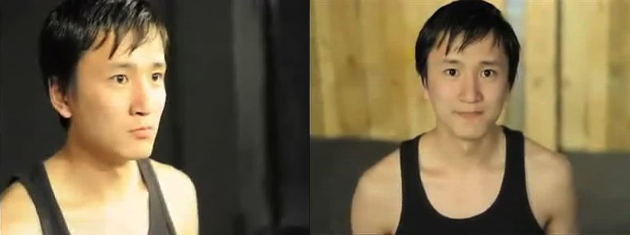
Aleksandr Asochakov will play the main male role in
Baikonur. He is 19 years old and studies acting at the St.
Petersburg Theater Arts Academy. We’ll publish his casting video
soon!
Veit Helmer flies to Paris for a
meeting with probable main actress
July 2, 2010 – 18:55
Veit flew yesterday to Paris to meet the most probable candidate
to play the role of
Rose Dorn in Baikonur. She is a very
pretty, talented young actress, playing
her first main
role in a feature film! As soon as it is confirmed we will
publish her name first hand here!
Nipkow Programme
June 30, 2010 – 16:00
5.000 Euros were missing for “Baikonur”. I asked the Nipkow
Foundation to grant me a six months scholarship. Three months
were granted, so the development of “Baikonur” was financed.
I was able to extend my scholarship later for one additional
month. Also the Nipkow programme contributed financially to my
location tour to Baikonur and gave valuable feedback to my
screenplay.
Nipkow Programme was founded in 1992. The
original purpose was to invite filmmakers from Eastern Europe to
come to Berlin and to initiate international co-productions. Many
famous filmmakers profited by the support and the contacts they
received by the Nipkow programme. Many of them stayed in Berlin.
One of them is my screenwriter Serge Ashkenazy.
During the
last years, the Nipkow programme repositioned themselves as a
network open to filmmakers from all European countries. And so
filmmakers from Berlin are not excluded anymore!
Two very
active and smart ladies run the Nipkow programme: Uta Ganschow
and Petra Weissenburger.
➔ Do you have any experience with development funding? Do
you know interesting programmes or grants you’d like to share?
Set model and drawings
June 23, 2010 – 12:00
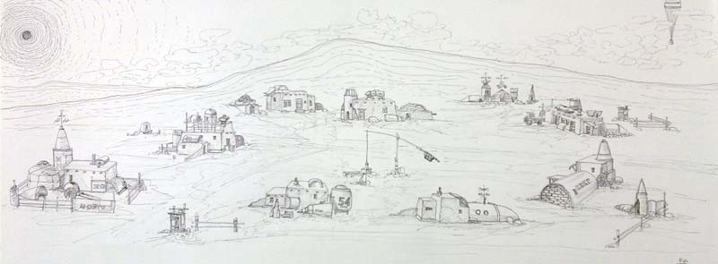
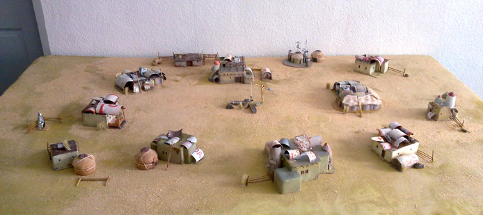
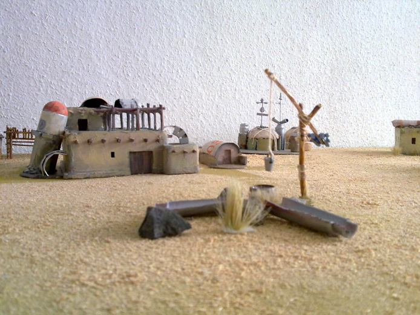
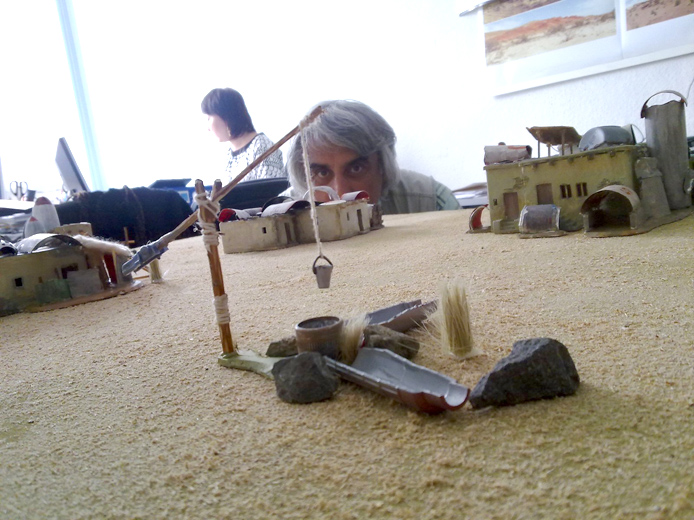
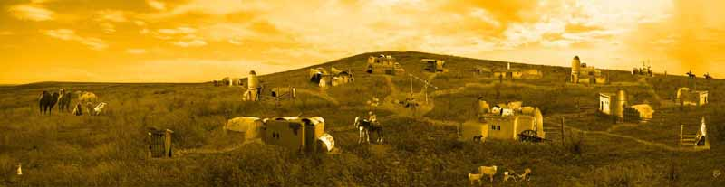
Art director Rustam Odinaev made models and drawings for
the Kungej village. The construction has started.
Development financing
June 21, 2010 – 21:00
Sergej has a family to support. He could not work for free.
It was obvious that we needed to travel to Baikonur after writing
the first draft, to do some research. All that costs money.
My previous film “Absurdistan” had received a development grant
by the MEDIA programme of the European Union. The application
process was a nightmare, full of European bureaucracy. But it was
good money to start with. I decided to go a step further and to
make an application for a slate funding, i.e. to apply for
development support for three projects at the same time. The
other projects were “Halola” and “Kabul, Germany”.
My
friend Bakthyar Khudojnazarov first told me about the idea of
“Halola” ten years ago. It was a project about a stunning Muslim
wedding rite. We engaged Kirgyz writer Zunwas Arbadu to write the
treatment and the screenplay. Bakhtyar shall direct the film once
he completes his project “Waiting for the sea”, and I will
produce it.
The third project is based on a newspaper clip
from the “International Herald Tribune” about a US training camp
in a Bulgarian village. I hired filmmaker Ahmet Golbol to write a
treatment and the screenplay. For the development of these three
projects I budgeted 140.000 Euro. MEDIA would grant me according
to their regulations 50 %.
I entered the application in
November 2007.
Simultaneously I applied for screenwriting
support for Baikonur at the Medienboard Berlin-Brandenburg, the
regional film fund, where my company is based.
I applied
for 25.000 Euros and was granted 20.000 two months later.
MEDIA took five months to decide. As 70.000 Euros is the minimum
support for slate funding, that’s what I received.
The location for the village has been
chosen!
June 16, 2010 – 19:00
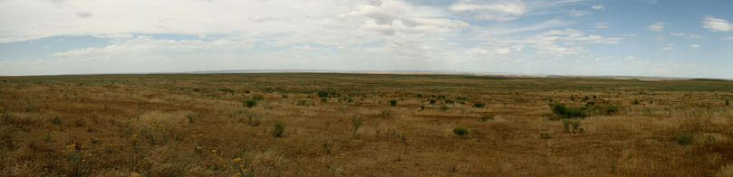
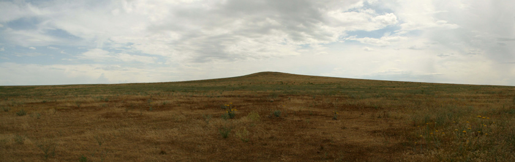
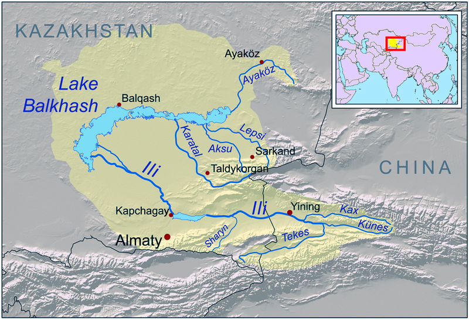
Veit found the perfect place to build the village, main
location of “Baikonur”, located close to the Lake
Kapchagay, in Kazakhstan.
About casting
June 10, 2010 – 10:00
Casting is more important to me, then it is to many other
directors.
For my last film “Absurdistan”, I casted in 28
countries.
For “Baikonur”, I hired casting directors in
Germany, France, UK, and the US to find a suitable Rose Dorn. For
all the other roles I hired casting directors in Moscow, Tashkent
and Almaty.
Rose Dorn is written as a German woman. But I
think she could also be French, Canadian or Swedish. Nathalie
Bialobos, my casting director in Paris, was the first who
finished the auditions. She never invites many actresses, but
always makes excellent choices. On December 4th 2009, I went to
Paris for the callback. I was especially interested in one model,
who did an excellent audition. There was one more prominent
actress, who did not want to audition before meeting me. So we
met a week later, and she did a great audition.
The
casting in London happened a few days before Christmas. There
were many great actresses around the world, but none were as
charming as my French actresses.
In January, I went to
L.A. and New York. The protagonist of my documentary film,
“Behind the Couch”, Zora DeHorter, who is a casting director, had
already auditioned hundreds of actors. I watched the auditions
through a new website (CAZT) and chose the finalists I wanted to
meet in person.
CAZT provides casting studios for free.
They charge the actors who are interested to see their audition
online. Sounds like a rip-off, but as the actors must not pay, it
saves the producer money.
In New York I rented a space and
made the casting all by myself, including camera. Quite
exhausting…
New trip to Kazakhstan
June 8, 2010 – 16:00
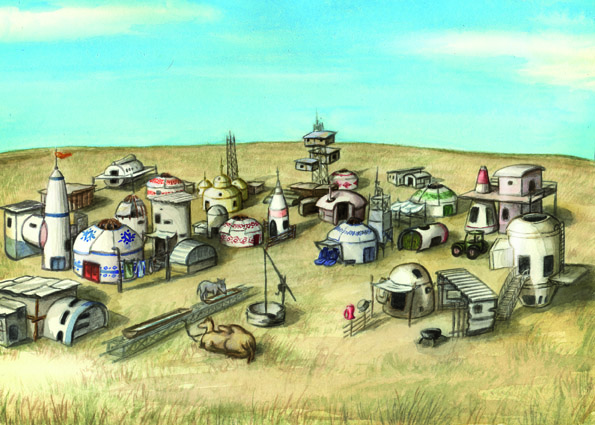
Veit Helmer is flying today to Kazakhstan, to decide where
to have the set constructed. A whole village will be built for
the movie.
Hanging posters in Cannes
May 19, 2010 – 12:00
Three days hanging posters in Cannes to promote the site!
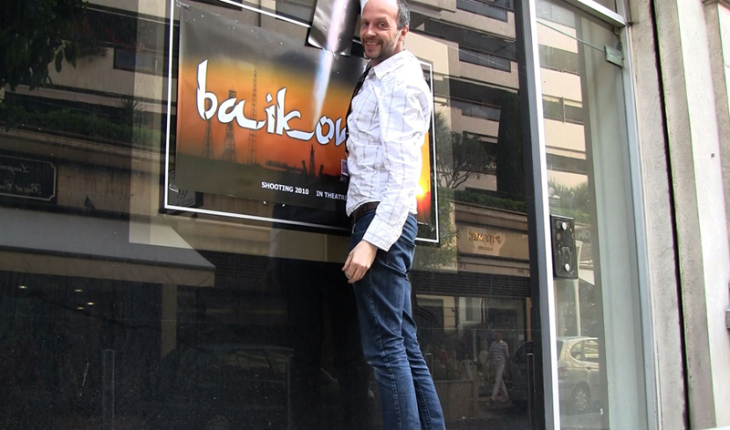
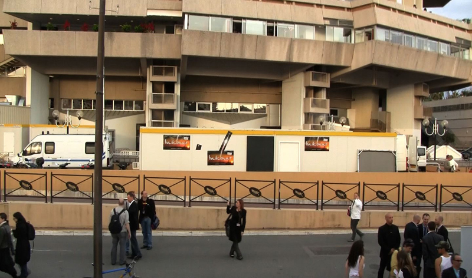
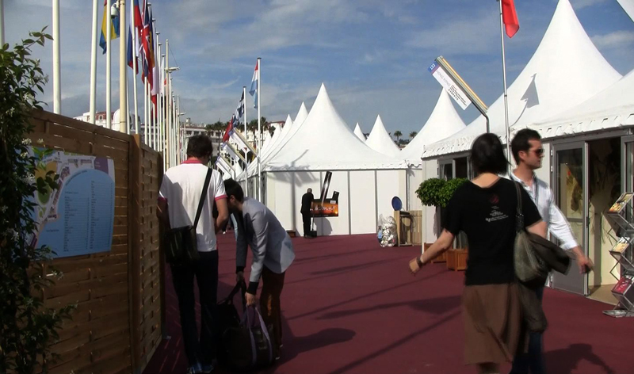
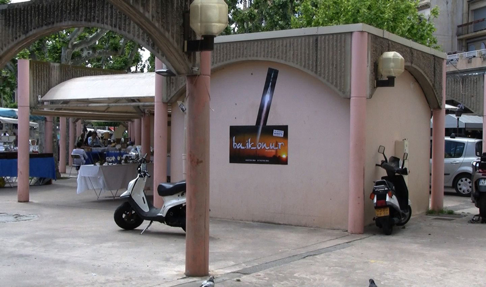
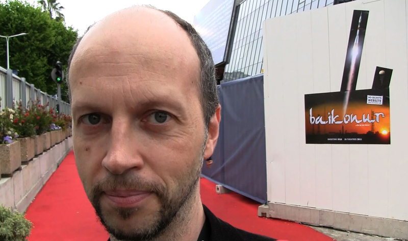
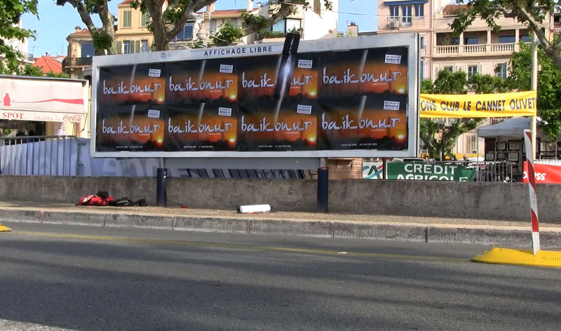
Treatment
May 18, 2010 – 20:00
The day after my meeting with Sergej, I e-mailed him the links
about space tourism and space garbage. We exchanged a few
thoughts and then… silence.
Two months later, Sergej
e-mailed me the first treatment. Full of excitement and anxiety,
I opened the file and…it was written in Russian!
Sergej
comes originally from Odessa. He lives in Berlin since 1990. I
can speak German with him, but he writes in Russian.
Sergej introduced me to Wolfram Spanier, a translator, who is
known to be a genius in translating screenplays from Russian to
German. Based on his reputation, I engaged Wolfram to translate
the treatment. Then Sergej told me that Wolfram does not speak
Russian. I could not believe my ears. I became nervous. Sergej
calmed me down. Five days later Wolfram e-mailed me a translation
that reads like poetry.
I love Sergejs writing style. His
prose is so poetic. The elements I required were all in there,
and also many new ideas. But as I had previously experienced with
other eastern European writers, it was rather non-linear. Scenes
describing the plot were mixed with scenes establishing
characters or the location. There were also flashback scenes
without a dramaturgical need. I am not interested in extremely
story-driven films. I like to place my films in unusual locations
and I like special characters. But my aim is to interweave in
every scene all of the three: character development, set-up of
location and progress of plot.
It was definitely too early
to go into the screenwriting process. I asked Sergej to rewrite
the treatment.
The second treatment was a big step
forward. I wished to be able to continue that process, but taking
Sergej’s wishes into consideration, we decided to move
forward entering the scriptwriting process.
➔ Write a short synopsis to what you think the movie
Baikonur could be about.
Idea of Baikonur
May 10, 2010 – 17:00
I cannot remember exactly when I had the idea to shoot a movie
about Baikonur.
For many years, newspaper clips and
pictures about Cosmonauts have attracted my attention.
But a location is not a story…
When I was sound-mixing my last movie “Absurdistan”, the
assistant sound mixer Alexej asked me if his father Sergej could
come visit us the following day. I never met Sergej, but I knew
that he is a known screenwriter. I agreed and started to guess
about a possible reason for his visit. I could not imagine that
he would be interested in watching the sound mix (a rather
technical process!) and speculated, that Sergej was keen to write
for me. As I had not yet lined up any new project, I saw the
opportunity of Sergej and I developing a screenplay together,
which could become my fourth feature film. While thinking what to
propose to him, I remembered the idea of making a movie about
Baikonur. That day, my sound mixers worked long hours. They would
tinker about one or two hours for a 15-second scene, to offer me
the best of all possible mixes of 80 tracks. To give valuable
input, I stayed outside the studio and only went inside once they
had achieved a good preliminary result. While sitting outside,
instead of counting the minutes, I started researching about
Baikonur, preparing for Sergej Ashkenazy’s visit the next
day. Google showed me a million results for “Baikonur”. I also
tried combinations, such as “Baikonur – accidents”. Terrible
stories about the tragic explosion of the Buran space shuttle
appeared. I tried “Baikonur – funny” and reports about nearby
villages popped up, telling stories about villagers collecting
rocket pieces that fall down in the steppes after a rocket
starts.
I was struck by this contrast between space tourism and
space garbage.
Space tourism…
Five persons have visited the international space station
after paying 20 – 30 Million USD. Among them, Microsoft manager
Charles Simonyi and Iranian–American business woman Anousheh
Ansari.
Space garbage…
When a rocket travels to the orbit, large parts of it fall
down to the steppe (propulsion stages). I found a newspaper clip
about villagers in Kazakhstan, who collect those parts and build
houses with them.
And then there were pictures about cosmonauts returning to
earth, landing with their capsules into the steppe. One of those
pictures particularly took my attention: A capsule in the steppe
that was approached by villagers hours before the rescue team
came.
Looking back, all elements of the final story were already there
and yet, I was still two treatments and six drafts away from the
final screenplay.
When I pitched the idea to Sergej the
following day, I found a writer fascinated by space exploration.
We agreed that Sergej would write a treatment first, before we
entered into contractual obligations.
➔ Do you know any interesting stories related to space
travelling you would like to share with us?
What makes a website special?
May 5, 2010 – 18:00
That was the question i asked myself.
I do not have the budget to spend like big producers or
studios have available to create their sites. But aren’t many of
them boring?
What can I do, that others don’t do?
Being producer, co-writer and director has advantages and
disadvantages. I can take decisions usually much faster, as there
is nobody I must ask for approval. Giving information to the
press or putting stuff online usually take weeks, until all
people involved have agreed to it.
So here is an
advantage. I will share everything, the good and the bad things,
early drafts, footage with mistakes, contracts, financial plans,
everything usually considered confidential!
And if anyone has an idea to improve the project, I can
instantly alter it, without going through a long process of
approval.
How many websites are out there?
What can you do to
generate more traffic?
We launched our website during the Cannes film festival
2010.
I hanged posters around the festival venue as all
distributors and journalists I wanted to reach were there.
➔ Do you have any creative ideas to improve our site?
The story of the film
May 4, 2010 – 12:00
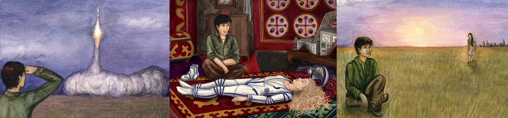
There are two worlds: the world of space, and the world of the
steppe. At first we see the former. A rocket is being launched.
It will carry three people into orbit, two cosmonauts and one
tourist, a young German girl named Rose Dorn. Emitting a mighty
roar, the rocket blasts off into the starry, black void.
The village of Kedej, a hundred kilometers from Baikonur. Its
buildings are strangely shaped, as if they’ve descended into the
desert steppe from a science fiction painting. Silvery titanium
cylinders under gold foil roofs and low moon-white cupolas topped
with multi-colored striped spires rise above the shimmering
surface of a dried-up salt lake. Occasional brown felt yurts
darken the landscape. The Kedejans make their living from an
unusual business. They search for and collect spent rocket
stages, fuel tanks, and spherical booster fairings.
After cleaning off the remnants of fuel, they use them to
build houses, garages, and enclosures for their animals. They
sell the leftovers to the Chinese. The entire village takes part
in the business. Only old people live here. The young have left
the village long ago, unless you count Kandrar, the grandson of
old Adam, and an eccentric, somber, unsociable girl named Balara.
Her dishevelled hair and sloppy, shapeless tunic can often be
glimpsed in the village square. The villagers dislike Balara and
consider her practically mad.
And now about love. It began when the young Kedejan,
Kandrar, caught sight of Rose Dorn, the beautiful space tourist,
on television. He liked her very much. And later he also heard
her tender voice on the radio (Kandrar was the village radio
operator) singing a lullabye from orbit to her little sister in
Germany. Kandrar was utterly smitten on the spot. But then
tragedy struck. While returning to Earth from orbit, the space
tourist and her landing capsule disappeared without a trace. A
long search was conducted, but to no avail.
A week later, far into the steppe, Kandrar by pure accident
suddenly discovered the lost capsule containing Rose Dorn. She
lay in it like Sleeping Beauty, beautiful and still. Kandrar
thought she was dead, but soon realized she was asleep in a deep
and heavy coma. That same night he brought Rose secretly into his
yurt, and hid her there from the neighbors for a long time. He
dressed her in his mother’s bridal attire, laid her on a white
carpet, and enjoyed the sight of her sleeping day and night, as
he burned from unrequited love. But he could not wake her at all.
Then a dangerous event occurred that threatened the lives of both
Kandrar and his secret captive. To save her, he covered her with
his body, placing a fervent kiss upon her rosy lips in a
despairing farewell. And along with the roar and shuddering of
the earth from the rocket booster that had fallen close to the
yurt, his Koketai (meaning tender, as Kandrar had named her)
awoke…
Slowly she regained consciousness. At first she remained seated,
but in a few days she cautiously stood up. Yet her memory had
still not returned. Who was she and where was she from? Koketai
could not remember, no matter how she tried. What was this
strange dwelling she found herself in? And who was this
unfamiliar boy bustling about her? Kandrar told her the whole
truth, but Rose didn’t believe it, or more likely she didn’t
understand what he was saying. Kandrar told her a lie, that she
was his fiancée who had been long been ill, and had forgotten it.
More than death he feared that Koketai would leave him if she
learned the whole truth. He wouldn’t let her out of the yurt. At
night as she slept soundly, he would sit near her, listening to
her light breathing, and weep, and whisper words of love, though
his virtuous nature kept him from touching her. Love’s yearning
possessed Kandrar at other times as well, as when Koketai was
washing herself, standing in an old tin washtub with shimmering
streams of water flowing from her taut breasts and rounded hips,
while he gazed at her through a window in the yurt and even
groaned from his overflowing desire…
But everything hidden
is eventually revealed. They learned of the girl in the village,
and then at the cosmodrome. Kandrar, to save his love, carried
Koketai off and hid her in a distant grotto. What happened there
is what may always happen between a young boy and girl. The night
of love raised Kandrar to the pinnacle of bliss… and Rose’s
memory unexpectedly returned. In the morning he went to kiss her,
but she politely declined.
Important Russian officials from Baikonur came for her, and
her father, the German millionaire Wolfgang Dorn. They took
Koketai from Kandrar and brought her back to Germany.
In gratitude for saving Rose, the officials invited Kandrar
to work at the cosmodrome. He became a tester of the ejection
seats that catapult from the ship in case of emergency. They
began launching him into the air, like a guinea pig, up to ten
times a day. He’d fly up with smoke and a bang, a sudden silence
with Kandrar bobbing in his parachute, surveying the area. It was
all beautiful and interesting, but it couldn’t take the place of
Koketai for Kandrar; he still loved and waited for her. And she
returned to the cosmodrome for a new flight into space. Kandrar
prepared a dinner for her, with local food from his village. Rose
explained him, that she was going for a long time to understand
the strange phenomenon many cosmonauts had seen, that of ghostly
human figures floating in space, who were perhaps an unknown
extraterrestrial form of life. “What about us?!” exclaimed
Kandrar. “What about our night together, Koketai!” Taking his
face in her hand, Rose said quietly, “No, Kandrar, no. That
wasn’t our night. That night you were with Koketai, and I am not
she… I have devoted my love to outer space.”
In the morning she flew away. And Kandrar zoomed in his chair
over the spring steppe and whispered, barely audibly, “Farewell…”
He landed in some tall grass, unbuckled his parachute, and
without a glance toward the cosmodrome, went into the steppe.
Towards evening he mounted into the steep hills and sat,
arranging his legs under him as his ancestors had done for ages.
Suddenly he heard a new and tender song. “The Syrtan,” (Bird of
Happiness – Kazakh) said Kandrar in amazement.
The prophetic bird, shimmering with magical plumage, was sitting
in the branches of a tamarisk bush, and her voice was enchanting.
Someone else was watching Kandrar from a nearby low hill, and
also listening to the wondrous bird. She had changed that night.
Her hair, combed and gathered back from her forehead, fell onto
her shoulders in a soft wave. Her face had acquired beauty and a
joyous, luminous peace in the solemn light of the moon. Her
perpetually stained tunic had become a marvelous gown. And
happiness shone in her eyes.
It was Balara.
Casting in Uzbekistan
April 27, 2010 – 10:00
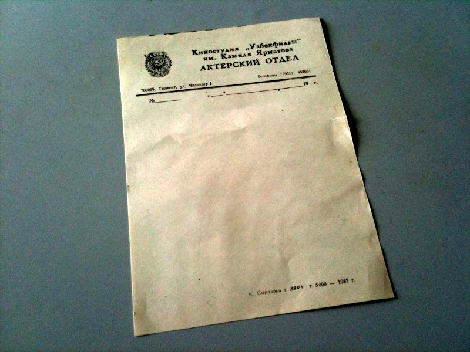
Casting sheet from the Uzbek Film Studio.
You can watch
the casting videos in our videoblog, and let us know which
“Kandrar” you like better!
My appartment in Almaty is in an old soviet style block, situated
behind new fancy shiny skyscrapers, signposts of the economic
wealth of this city.
In the morning I tend to ask my first
meeting to bring fresh bread, so I have breakfast.
This
morning it was my costume designer talking to me about the bridal
dress and my casting director Galina showing me auditions for the
supporting cast.
The afternoon was kept for finally
signing a hotel deal for me, my crew and my actors for the next
six weeks.
I have a choice of several hotels in the
steppe. But so far I was not satisfied with the offers I had.
Where will we shoot?
I wanted from the beginning to build
a village.
I wanted to have a density of weird buildings,
which can’t be found in reality.
A year ago I found the
place to build the village on Google earth.
The quest was:
where to find the nearest steppe near the main Kazakh city
Almaty.
Because to build around Baikonur would have been a
logistic nightmare. Everything related to the small film industry
in Kazakhstan is located in or near the former capital.
Kapchagai, one hour north is the point, where the steppe starts.
As there is a lake and several casinos (!), there is for
Kazakhstan a unusual choice of hotels.
Read this, if you
want to know about this strange place:
http://www.nytimes.com/2007/01/23/world/asia/23kazakh.html
I wanted to put my crew in one place called “MoreLux”, but with
every meeting, the owner decided to raise the price tag some
thousand dollars higher and finally gave up negotiating.
Today I signed a contract with a hotel called Robinson. Also
right next to the lake, and in close distance to my village, it
hopefully will help to motivate my crew after long hours of
shooting in the steppe.
It is quite funny to sign a
contract for 1615 nights. But as season will be over next week,
it is affordable.
The truck filled with equipment coming from Germany is approaching Kazakhstan. Today it reached Chelyabinsk, Russia!
I arrived with some delay at 7 h in Almaty.
At 9 h my
assistant Veronika came for the first meeting.
At 10 h we
went to my Kazakh partner Eurasia Film Production, where all my
crew arrived.
I presented them the storyboard and my plan
how to start shooting, in case my truck does not arrive on time.
Then we went to Kapchagai to see my village completed. But no, it
was not really completed as I had some more ideas how to change
the colors and shape of some building. A bulldozer came and
digged a hole, where the generator will make his noise for
himself. And in the evening I met some drivers Veronika found,
who do speak english!
Now I am VERY tired and will sleep…
The beautiful Marie de Villepin will play the lead female role of Baikonur (former Rose Dorn, renamed Julie Mahè). She is a very talented actress and also a successful model, the face of Givenchy’s “Ange ou Demon”.
I am flying to Almaty, Kazakhstan.
Like so many times
during the last four months.
But this time it is not for
2-3 days… It is for 2 and a half months…
Because we’ll
start shooting!!!
In 10 days.
I can’t believe what
I’m writing here!
Every movie has its magic, but this
project for sure is most special!
“Baikonur” will be my
fourth feature film, but there is no routine here.
Everything is new again. Kazakhstan… why Kazakhstan??
Almost three years ago I met screenwriter Sergej Askenazy during
the mixing session of the Czech version of “Absurdistan”. His son
Alexej worked as assistant sound mixer at Interaudio (the
beautiful former Geyer mixing lab). He asked if his father could
visit the day after. I wondered, why Sergej (who I only knew from
his work) would come to a mixing session and I hoped, that he
would ask me to work with him. I like to work with experienced
writers, but I like them to write something based on my ideas.
So I pitched Sergej this old idea of mine, to make a movie in
Baikonur. He loved that idea. The rest is history.
We were
inspired by some old news clippings about lost cosmonauts in the
steppe, villagers collecting space garbage and billionaires
travelling to the International Space station ISS as tourists, 20
million a ticket!
I created a package of altogether three
movie projects and applied for a MEDIA slate funding, a fund
dedicated for growing medium size film production companies. And
I got it. Even though I love my company being small and staying
small, I suddenly had resources to pay writers good money for
good work!
The tricky part of MEDIA is… you must match
every Euro they give you with another Euro you invest, or someone
else invests. In the case of “Baikonur” the Medienboard
Berlin-Brandenburg was really brave to get on board on a base of
14 pages treatment. Sergej and I went to Baikonur in May 2009 and
made an extensive research. Arte came on board and the German
broadcasters RBB and BR. I started to do a very international
casting and went to Paris, London, New York and Los Angeles. I
found Marie de Villepin for the female lead.
Then I
started casting in Kazakhstan, Uzbekistan, Kirgizstan and Russia.
My Russian casting director found Alexander Asochakov and my
Uzbek casting director found Sitora Farmonova. But most of the
actors will come from Almaty.
With a little bit of
pushing, three more government funds joined the Medienboard: FFA
(the national fund), BKM (the cultural fund) and DFFF (the new
German tax shelter). And four years after the shooting of
“Absurdistan” I am preparing the shoot of my new movie! Four
years so far is the cycle I have chosen for making my movies. It
gives me enough time to prepare an promote each project.
Today is August 25… (happy birthday mum!), I am sitting on a
plane to Almaty, Kazakhstan!!!
A new version of the screenplay just got ready, all revised and
with some considerate changes. The biggest and most visible one
is the characters’ names, almost all of them have been
reinvented. Kandrar, the main male role, is now called Gagarin
(well, his real name is Iskander Orynbekov, Gagarin is his
nickname), Rose Dorn, the main female character, originally a
German space tourist, became Julie Mahé, a French space tourist.
Balara is now called Nazira, Adam became Rustam, Bachor is now
Timur. Apart from the names, the opening sequence has also been
changed, and is now charged with beautiful space archive scenes,
interweaved with scenes in the steppe and actions from the main
characters!
Everything is taking shape for the beginning
of the shoot!
Veit and director of photography Nicolai Kanow flew yesterday to Kazakhstan to plan the storyboard and make camera and film tests. Afterwards Veit will attend the last castings and decide who is going to be in the movie. More infos and casting videos to come!
Sergej did a great job researching space travel through books and
the internet, but it lacked a feeling of realism.
Since
working with Gordan Mihic, the screenwriter of such fantastic
films as “Time of the Gypsies” and “Black Cat, white Cat”, I know
about the importance of investigating reality before embarking
into a fairy tale.
Sergej and I needed to see the place
where rockets are launched.
A trip to space costs 20 Mio.
USD (or 35 Mio. USD, if you travel two weeks instead of one).
For a trip to see a space launch at Baikonur, travel agents in
the internet asked for 4000 Euros. I contacted a travel agent in
Kazakhstan and booked two trips for half the price. Still quite
expensive, but I felt necessary.
Another option would have
been to ask for an official press invitation. But I felt i was
not ready yet, to answer the inevitable questions about the
project. I wanted to visit Baikonur rather as a tourist.
On May 25, 2009 Sergej and I travelled by plane from Berlin via
Istanbul, Almaty to Kzyl-Orda. We then were supposed to take a
train to Baikonur. As Sergej recalled numerous bad experiences of
travelling by train in former Soviet countries, he asked the
driver who took us from the airport to the train station to
continue the ride for four more hours (and 80 dollars) and we
reached Baikonur.
Baikonur is in the middle of nowhere. It
was a former secret city, not indicated on official maps. And
still today, you need a special permit to enter the city. The
local contact man was waiting for us at the gate. Soldiers were
checking the cars and papers. After 40 hours of travelling, we
finally arrived.
Our hotel had little comfort. But we did
not complain, as our mission was to work, not to take a vacation.
Every morning at 8 am, a car came to pick us up and brought us to
the space station, around 30 kilometres north of the city. The
workers had already left at 6 am with seven trains, bringing them
to the different platforms.
The rockets are built in
Russia and assembled and launched in Baikonur. The assembly halls
looked less spectacular than I imagined. Our tour included many
memorial sites and museums. I started to worry, what places to
use as locations for the film.
We tried as much as
possible to see places off the beaten track and to speak with
workers and inhabitants of Baikonur about their daily life.
On our last day in Baikonur, a Soyuz TMA rocket started with
three cosmonauts. Thanks to our new friends from the press
department, Sergej and I were allowed to be in the
VIP-department, when the cosmonauts were getting the permission
to go. The experience to see a rocket taking off was unique and
unforgettable.
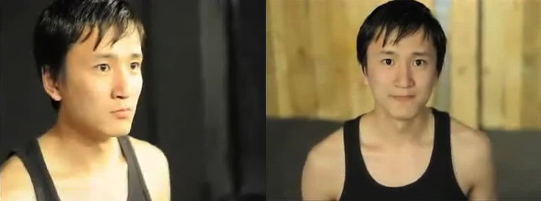
Aleksandr Asochakov will play the main male role in Baikonur. He is 19 years old and studies acting at the St. Petersburg Theater Arts Academy. We’ll publish his casting video soon!
Veit flew yesterday to Paris to meet the most probable candidate
to play the role of
Rose Dorn in Baikonur. She is a very
pretty, talented young actress, playing
her first main
role in a feature film! As soon as it is confirmed we will
publish her name first hand here!
5.000 Euros were missing for “Baikonur”. I asked the Nipkow
Foundation to grant me a six months scholarship. Three months
were granted, so the development of “Baikonur” was financed.
I was able to extend my scholarship later for one additional
month. Also the Nipkow programme contributed financially to my
location tour to Baikonur and gave valuable feedback to my
screenplay.
Nipkow Programme was founded in 1992. The
original purpose was to invite filmmakers from Eastern Europe to
come to Berlin and to initiate international co-productions. Many
famous filmmakers profited by the support and the contacts they
received by the Nipkow programme. Many of them stayed in Berlin.
One of them is my screenwriter Serge Ashkenazy.
During the
last years, the Nipkow programme repositioned themselves as a
network open to filmmakers from all European countries. And so
filmmakers from Berlin are not excluded anymore!
Two very
active and smart ladies run the Nipkow programme: Uta Ganschow
and Petra Weissenburger.
➔ Do you have any experience with development funding? Do you know interesting programmes or grants you’d like to share?
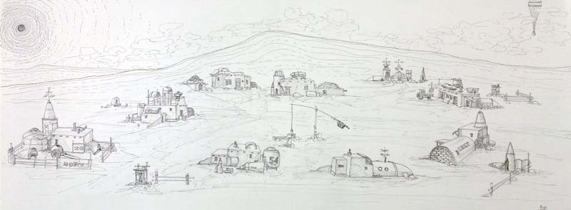
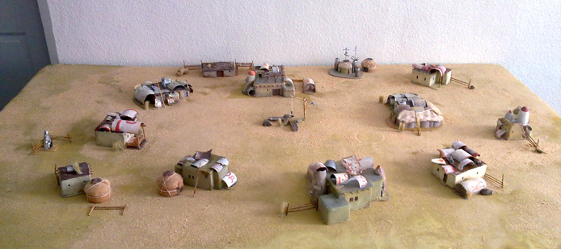
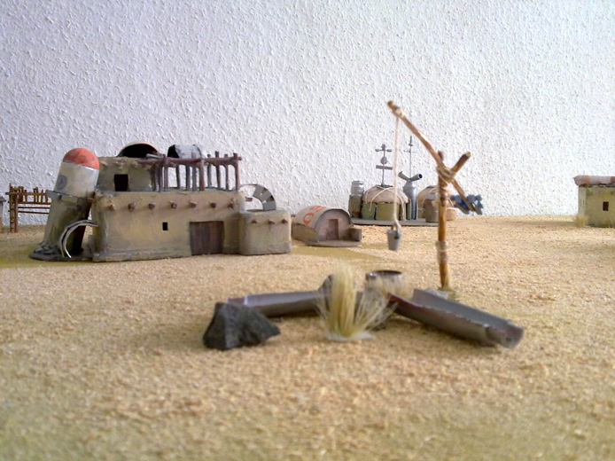
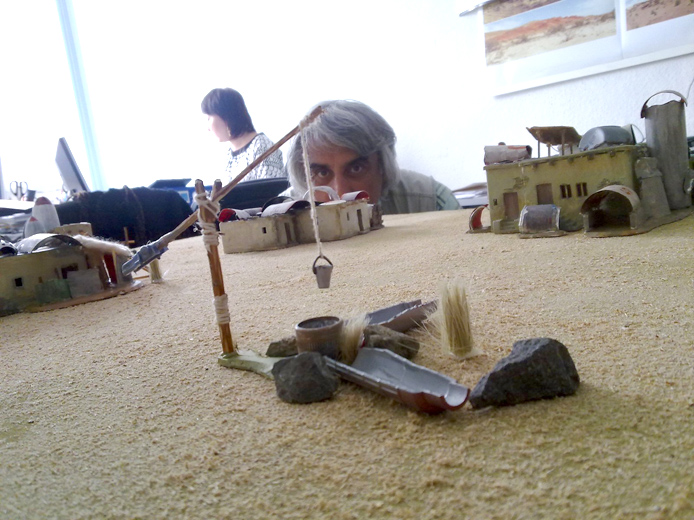
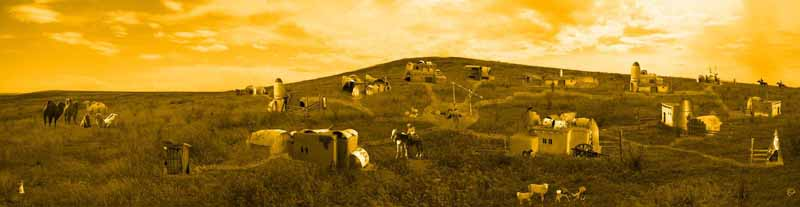
Art director Rustam Odinaev made models and drawings for the Kungej village. The construction has started.
Sergej has a family to support. He could not work for free.
It was obvious that we needed to travel to Baikonur after writing
the first draft, to do some research. All that costs money.
My previous film “Absurdistan” had received a development grant
by the MEDIA programme of the European Union. The application
process was a nightmare, full of European bureaucracy. But it was
good money to start with. I decided to go a step further and to
make an application for a slate funding, i.e. to apply for
development support for three projects at the same time. The
other projects were “Halola” and “Kabul, Germany”.
My
friend Bakthyar Khudojnazarov first told me about the idea of
“Halola” ten years ago. It was a project about a stunning Muslim
wedding rite. We engaged Kirgyz writer Zunwas Arbadu to write the
treatment and the screenplay. Bakhtyar shall direct the film once
he completes his project “Waiting for the sea”, and I will
produce it.
The third project is based on a newspaper clip
from the “International Herald Tribune” about a US training camp
in a Bulgarian village. I hired filmmaker Ahmet Golbol to write a
treatment and the screenplay. For the development of these three
projects I budgeted 140.000 Euro. MEDIA would grant me according
to their regulations 50 %.
I entered the application in
November 2007.
Simultaneously I applied for screenwriting
support for Baikonur at the Medienboard Berlin-Brandenburg, the
regional film fund, where my company is based.
I applied
for 25.000 Euros and was granted 20.000 two months later.
MEDIA took five months to decide. As 70.000 Euros is the minimum
support for slate funding, that’s what I received.
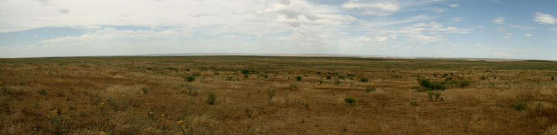
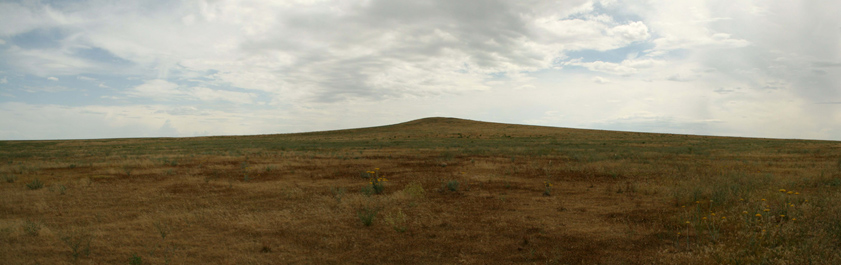
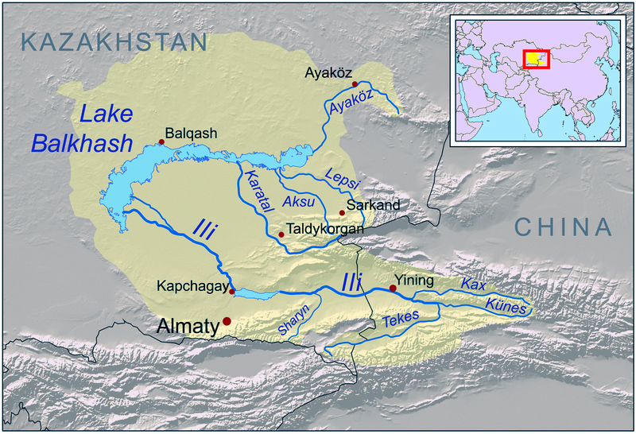
Veit found the perfect place to build the village, main location of “Baikonur”, located close to the Lake Kapchagay, in Kazakhstan.
Casting is more important to me, then it is to many other
directors.
For my last film “Absurdistan”, I casted in 28
countries.
For “Baikonur”, I hired casting directors in
Germany, France, UK, and the US to find a suitable Rose Dorn. For
all the other roles I hired casting directors in Moscow, Tashkent
and Almaty.
Rose Dorn is written as a German woman. But I
think she could also be French, Canadian or Swedish. Nathalie
Bialobos, my casting director in Paris, was the first who
finished the auditions. She never invites many actresses, but
always makes excellent choices. On December 4th 2009, I went to
Paris for the callback. I was especially interested in one model,
who did an excellent audition. There was one more prominent
actress, who did not want to audition before meeting me. So we
met a week later, and she did a great audition.
The
casting in London happened a few days before Christmas. There
were many great actresses around the world, but none were as
charming as my French actresses.
In January, I went to
L.A. and New York. The protagonist of my documentary film,
“Behind the Couch”, Zora DeHorter, who is a casting director, had
already auditioned hundreds of actors. I watched the auditions
through a new website (CAZT) and chose the finalists I wanted to
meet in person.
CAZT provides casting studios for free.
They charge the actors who are interested to see their audition
online. Sounds like a rip-off, but as the actors must not pay, it
saves the producer money.
In New York I rented a space and
made the casting all by myself, including camera. Quite
exhausting…
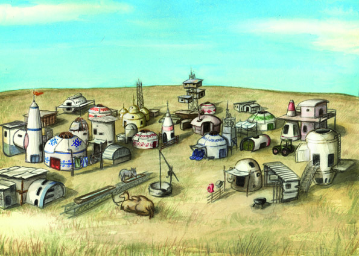
Veit Helmer is flying today to Kazakhstan, to decide where to have the set constructed. A whole village will be built for the movie.
Three days hanging posters in Cannes to promote the site!
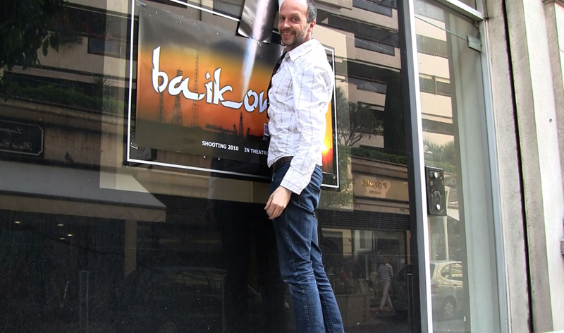
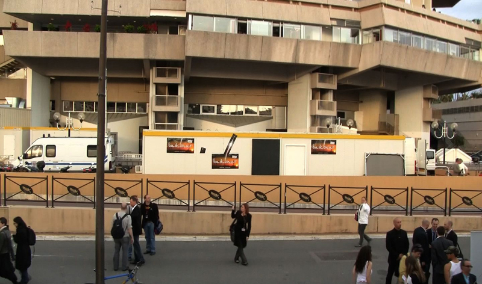
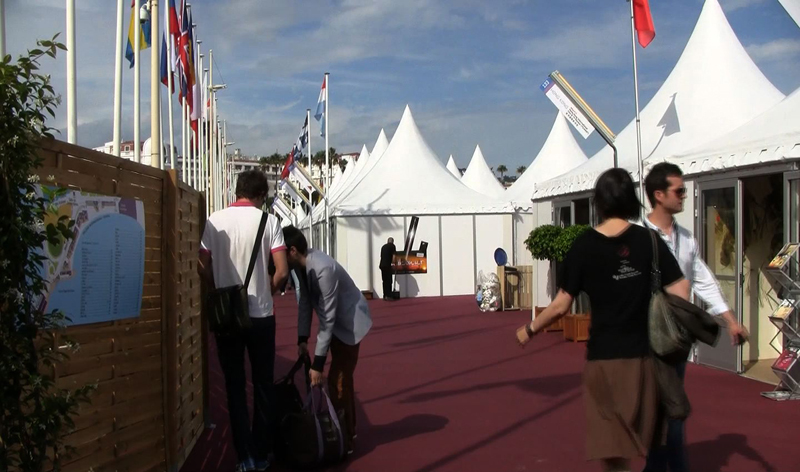
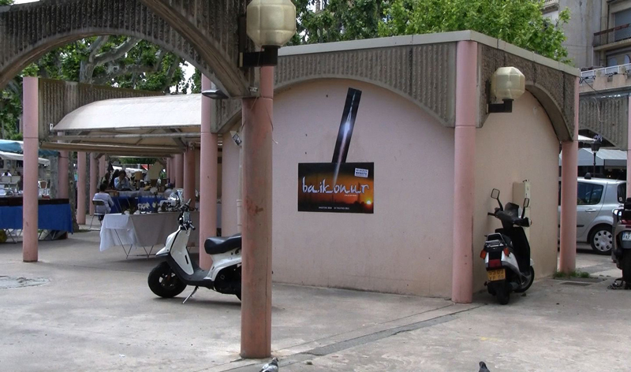
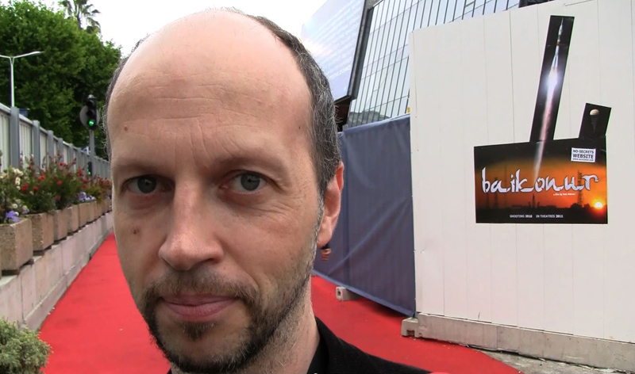
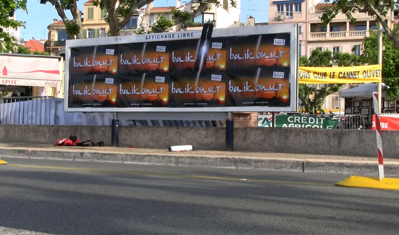
The day after my meeting with Sergej, I e-mailed him the links
about space tourism and space garbage. We exchanged a few
thoughts and then… silence.
Two months later, Sergej
e-mailed me the first treatment. Full of excitement and anxiety,
I opened the file and…it was written in Russian!
Sergej
comes originally from Odessa. He lives in Berlin since 1990. I
can speak German with him, but he writes in Russian.
Sergej introduced me to Wolfram Spanier, a translator, who is
known to be a genius in translating screenplays from Russian to
German. Based on his reputation, I engaged Wolfram to translate
the treatment. Then Sergej told me that Wolfram does not speak
Russian. I could not believe my ears. I became nervous. Sergej
calmed me down. Five days later Wolfram e-mailed me a translation
that reads like poetry.
I love Sergejs writing style. His
prose is so poetic. The elements I required were all in there,
and also many new ideas. But as I had previously experienced with
other eastern European writers, it was rather non-linear. Scenes
describing the plot were mixed with scenes establishing
characters or the location. There were also flashback scenes
without a dramaturgical need. I am not interested in extremely
story-driven films. I like to place my films in unusual locations
and I like special characters. But my aim is to interweave in
every scene all of the three: character development, set-up of
location and progress of plot.
It was definitely too early
to go into the screenwriting process. I asked Sergej to rewrite
the treatment.
The second treatment was a big step
forward. I wished to be able to continue that process, but taking
Sergej’s wishes into consideration, we decided to move
forward entering the scriptwriting process.
➔ Write a short synopsis to what you think the movie Baikonur could be about.
I cannot remember exactly when I had the idea to shoot a movie
about Baikonur.
For many years, newspaper clips and
pictures about Cosmonauts have attracted my attention.
But a location is not a story…
When I was sound-mixing my last movie “Absurdistan”, the assistant sound mixer Alexej asked me if his father Sergej could come visit us the following day. I never met Sergej, but I knew that he is a known screenwriter. I agreed and started to guess about a possible reason for his visit. I could not imagine that he would be interested in watching the sound mix (a rather technical process!) and speculated, that Sergej was keen to write for me. As I had not yet lined up any new project, I saw the opportunity of Sergej and I developing a screenplay together, which could become my fourth feature film. While thinking what to propose to him, I remembered the idea of making a movie about Baikonur. That day, my sound mixers worked long hours. They would tinker about one or two hours for a 15-second scene, to offer me the best of all possible mixes of 80 tracks. To give valuable input, I stayed outside the studio and only went inside once they had achieved a good preliminary result. While sitting outside, instead of counting the minutes, I started researching about Baikonur, preparing for Sergej Ashkenazy’s visit the next day. Google showed me a million results for “Baikonur”. I also tried combinations, such as “Baikonur – accidents”. Terrible stories about the tragic explosion of the Buran space shuttle appeared. I tried “Baikonur – funny” and reports about nearby villages popped up, telling stories about villagers collecting rocket pieces that fall down in the steppes after a rocket starts.
I was struck by this contrast between space tourism and space garbage.
Space tourism…
Five persons have visited the international space station after paying 20 – 30 Million USD. Among them, Microsoft manager Charles Simonyi and Iranian–American business woman Anousheh Ansari.
Space garbage…
When a rocket travels to the orbit, large parts of it fall down to the steppe (propulsion stages). I found a newspaper clip about villagers in Kazakhstan, who collect those parts and build houses with them.
And then there were pictures about cosmonauts returning to earth, landing with their capsules into the steppe. One of those pictures particularly took my attention: A capsule in the steppe that was approached by villagers hours before the rescue team came.
Looking back, all elements of the final story were already there
and yet, I was still two treatments and six drafts away from the
final screenplay.
When I pitched the idea to Sergej the
following day, I found a writer fascinated by space exploration.
We agreed that Sergej would write a treatment first, before we
entered into contractual obligations.
➔ Do you know any interesting stories related to space travelling you would like to share with us?
That was the question i asked myself.
I do not have the budget to spend like big producers or studios have available to create their sites. But aren’t many of them boring?
What can I do, that others don’t do?
Being producer, co-writer and director has advantages and
disadvantages. I can take decisions usually much faster, as there
is nobody I must ask for approval. Giving information to the
press or putting stuff online usually take weeks, until all
people involved have agreed to it.
So here is an
advantage. I will share everything, the good and the bad things,
early drafts, footage with mistakes, contracts, financial plans,
everything usually considered confidential!
And if anyone has an idea to improve the project, I can instantly alter it, without going through a long process of approval.
How many websites are out there?
What can you do to
generate more traffic?
We launched our website during the Cannes film festival 2010.
I hanged posters around the festival venue as all distributors and journalists I wanted to reach were there.
➔ Do you have any creative ideas to improve our site?
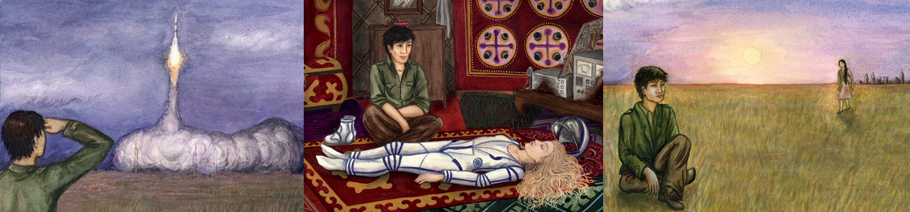
There are two worlds: the world of space, and the world of the
steppe. At first we see the former. A rocket is being launched.
It will carry three people into orbit, two cosmonauts and one
tourist, a young German girl named Rose Dorn. Emitting a mighty
roar, the rocket blasts off into the starry, black void.
The village of Kedej, a hundred kilometers from Baikonur. Its
buildings are strangely shaped, as if they’ve descended into the
desert steppe from a science fiction painting. Silvery titanium
cylinders under gold foil roofs and low moon-white cupolas topped
with multi-colored striped spires rise above the shimmering
surface of a dried-up salt lake. Occasional brown felt yurts
darken the landscape. The Kedejans make their living from an
unusual business. They search for and collect spent rocket
stages, fuel tanks, and spherical booster fairings.
After cleaning off the remnants of fuel, they use them to build houses, garages, and enclosures for their animals. They sell the leftovers to the Chinese. The entire village takes part in the business. Only old people live here. The young have left the village long ago, unless you count Kandrar, the grandson of old Adam, and an eccentric, somber, unsociable girl named Balara. Her dishevelled hair and sloppy, shapeless tunic can often be glimpsed in the village square. The villagers dislike Balara and consider her practically mad.
And now about love. It began when the young Kedejan, Kandrar, caught sight of Rose Dorn, the beautiful space tourist, on television. He liked her very much. And later he also heard her tender voice on the radio (Kandrar was the village radio operator) singing a lullabye from orbit to her little sister in Germany. Kandrar was utterly smitten on the spot. But then tragedy struck. While returning to Earth from orbit, the space tourist and her landing capsule disappeared without a trace. A long search was conducted, but to no avail.
A week later, far into the steppe, Kandrar by pure accident suddenly discovered the lost capsule containing Rose Dorn. She lay in it like Sleeping Beauty, beautiful and still. Kandrar thought she was dead, but soon realized she was asleep in a deep and heavy coma. That same night he brought Rose secretly into his yurt, and hid her there from the neighbors for a long time. He dressed her in his mother’s bridal attire, laid her on a white carpet, and enjoyed the sight of her sleeping day and night, as he burned from unrequited love. But he could not wake her at all. Then a dangerous event occurred that threatened the lives of both Kandrar and his secret captive. To save her, he covered her with his body, placing a fervent kiss upon her rosy lips in a despairing farewell. And along with the roar and shuddering of the earth from the rocket booster that had fallen close to the yurt, his Koketai (meaning tender, as Kandrar had named her) awoke…
Slowly she regained consciousness. At first she remained seated,
but in a few days she cautiously stood up. Yet her memory had
still not returned. Who was she and where was she from? Koketai
could not remember, no matter how she tried. What was this
strange dwelling she found herself in? And who was this
unfamiliar boy bustling about her? Kandrar told her the whole
truth, but Rose didn’t believe it, or more likely she didn’t
understand what he was saying. Kandrar told her a lie, that she
was his fiancée who had been long been ill, and had forgotten it.
More than death he feared that Koketai would leave him if she
learned the whole truth. He wouldn’t let her out of the yurt. At
night as she slept soundly, he would sit near her, listening to
her light breathing, and weep, and whisper words of love, though
his virtuous nature kept him from touching her. Love’s yearning
possessed Kandrar at other times as well, as when Koketai was
washing herself, standing in an old tin washtub with shimmering
streams of water flowing from her taut breasts and rounded hips,
while he gazed at her through a window in the yurt and even
groaned from his overflowing desire…
But everything hidden
is eventually revealed. They learned of the girl in the village,
and then at the cosmodrome. Kandrar, to save his love, carried
Koketai off and hid her in a distant grotto. What happened there
is what may always happen between a young boy and girl. The night
of love raised Kandrar to the pinnacle of bliss… and Rose’s
memory unexpectedly returned. In the morning he went to kiss her,
but she politely declined.
Important Russian officials from Baikonur came for her, and her father, the German millionaire Wolfgang Dorn. They took Koketai from Kandrar and brought her back to Germany.
In gratitude for saving Rose, the officials invited Kandrar to work at the cosmodrome. He became a tester of the ejection seats that catapult from the ship in case of emergency. They began launching him into the air, like a guinea pig, up to ten times a day. He’d fly up with smoke and a bang, a sudden silence with Kandrar bobbing in his parachute, surveying the area. It was all beautiful and interesting, but it couldn’t take the place of Koketai for Kandrar; he still loved and waited for her. And she returned to the cosmodrome for a new flight into space. Kandrar prepared a dinner for her, with local food from his village. Rose explained him, that she was going for a long time to understand the strange phenomenon many cosmonauts had seen, that of ghostly human figures floating in space, who were perhaps an unknown extraterrestrial form of life. “What about us?!” exclaimed Kandrar. “What about our night together, Koketai!” Taking his face in her hand, Rose said quietly, “No, Kandrar, no. That wasn’t our night. That night you were with Koketai, and I am not she… I have devoted my love to outer space.”
In the morning she flew away. And Kandrar zoomed in his chair
over the spring steppe and whispered, barely audibly, “Farewell…”
He landed in some tall grass, unbuckled his parachute, and
without a glance toward the cosmodrome, went into the steppe.
Towards evening he mounted into the steep hills and sat,
arranging his legs under him as his ancestors had done for ages.
Suddenly he heard a new and tender song. “The Syrtan,” (Bird of
Happiness – Kazakh) said Kandrar in amazement.
The prophetic bird, shimmering with magical plumage, was sitting
in the branches of a tamarisk bush, and her voice was enchanting.
Someone else was watching Kandrar from a nearby low hill, and
also listening to the wondrous bird. She had changed that night.
Her hair, combed and gathered back from her forehead, fell onto
her shoulders in a soft wave. Her face had acquired beauty and a
joyous, luminous peace in the solemn light of the moon. Her
perpetually stained tunic had become a marvelous gown. And
happiness shone in her eyes.
It was Balara.
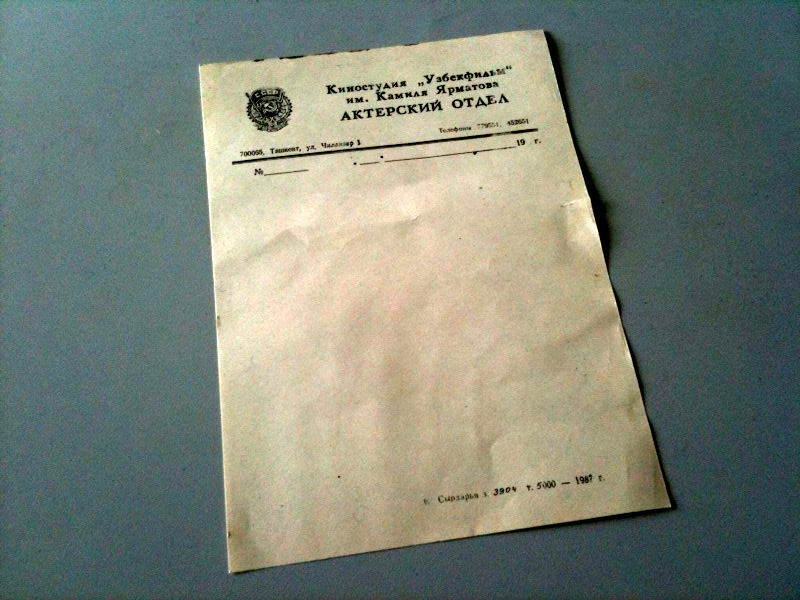
Casting sheet from the Uzbek Film Studio.
You can watch
the casting videos in our videoblog, and let us know which
“Kandrar” you like better!